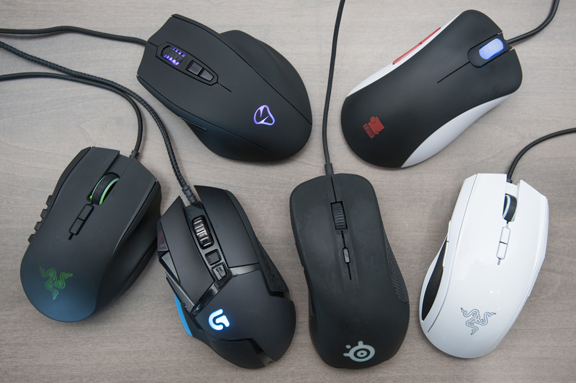

O site dedicado a ajudar você a montar o seu PC ideal!
SOBRE O NOSSO CHATBOT: DIOGO
Diogo, o assistente virtual do Hardware Helper
O Diogo é um chatbot avançado, desenvolvido especialmente para ser o seu companheiro em toda a jornada de
montagem e escolha do seu computador ideal. Utilizando tecnologia de Inteligência Artificial de última
geração, o Diogo é capaz de compreender suas dúvidas, analisar suas necessidades e fornecer respostas
rápidas, precisas e personalizadas sobre hardware, componentes, compatibilidade, desempenho e montagem de
PCs.
Com o Diogo, você tem acesso a um assistente virtual disponível 24 horas por dia, 7 dias por semana, pronto
para ajudar desde usuários iniciantes até entusiastas experientes. Ele pode recomendar peças de acordo com
seu orçamento, explicar diferenças entre componentes, sugerir upgrades, indicar lojas confiáveis e até mesmo
orientar sobre tendências e novidades do mercado de tecnologia.
Veja algumas das principais funcionalidades do Diogo:
Receber recomendações personalizadas de peças e configurações, levando em conta o seu perfil de uso,
seja para jogos, trabalho, estudos ou tarefas específicas.
Obter instruções detalhadas e passo a passo para montar seu PC, desde a preparação do ambiente até a
instalação do sistema operacional e drivers.
Esclarecer dúvidas técnicas sobre compatibilidade entre processador, placa-mãe, memória RAM, placas de
vídeo, fontes de alimentação e outros componentes.
Orientar sobre manutenção preventiva, limpeza, upgrades e boas práticas para garantir o melhor
desempenho e durabilidade do seu computador.
Indicar vídeos, tutoriais, artigos e conteúdos educativos para aprofundar seu conhecimento sobre
hardware e tecnologia.
Auxiliar na escolha de periféricos, monitores, sistemas de refrigeração e acessórios que complementam o
seu setup.
O Diogo foi treinado para ser claro, didático e objetivo, tornando o processo de montagem e escolha de peças
muito mais simples e acessível. Ele está sempre atualizado com as últimas tendências do mercado, garantindo
que suas recomendações estejam alinhadas com as melhores práticas e tecnologias disponíveis.
Não importa se você nunca montou um computador antes ou se já tem experiência: o Diogo está aqui para tirar
todas as suas dúvidas, sugerir soluções e acompanhar cada etapa do seu projeto. Basta digitar sua pergunta
ou descrever sua necessidade, e ele estará pronto para ajudar, tornando sua experiência mais tranquila,
segura e eficiente.
DESCRIÇÃO DO SITE
A Hardware Helper é uma plataforma criada para democratizar o acesso à informação sobre montagem, escolha e
compra de computadores. Nosso objetivo é ajudar qualquer pessoa, independentemente do nível de conhecimento,
a montar o seu PC ideal de forma simples, prática e sem complicações.
Aqui, você encontra um ambiente completo, com dicas, tutoriais, recomendações de peças, comparativos,
análises de desempenho e orientações sobre compatibilidade. Nosso assistente virtual, Diogo, está sempre
disponível para responder dúvidas, sugerir configurações e acompanhar você em cada etapa, desde a escolha
dos componentes até a montagem final e a configuração do sistema.
O site foi pensado para atender diferentes perfis de usuários: estudantes que precisam de um computador para
aulas e pesquisas, profissionais que buscam desempenho para trabalho, gamers que desejam o máximo em
performance gráfica, ou mesmo quem procura um PC para uso geral no dia a dia. Com uma navegação intuitiva e
conteúdos organizados por temas, você pode explorar tópicos como processadores, placas-mãe, memórias,
armazenamento, placas de vídeo, fontes, gabinetes, monitores, periféricos, refrigeração, softwares e muito
mais.
Além disso, oferecemos orientações sobre onde comprar peças com segurança, dicas para economizar,
informações sobre promoções e novidades do mercado. Nossa missão é garantir que você tenha todas as
ferramentas e informações necessárias para tomar decisões conscientes e montar um computador que atenda
exatamente às suas expectativas e necessidades.
Explore nosso site, converse com o Diogo, tire suas dúvidas e descubra como montar o PC dos seus sonhos pode
ser uma experiência fácil, divertida e educativa. Com a Hardware Helper, você nunca estará sozinho nessa
jornada. Vamos juntos transformar suas ideias em realidade e garantir que seu novo computador seja perfeito
para você!
COMO MONTAR O SEU PC
Ferramentas necessárias
Montar um computador pode parecer uma tarefa desafiadora à primeira vista, especialmente para quem nunca
teve contato com o processo. No entanto, com as ferramentas certas, um ambiente adequado e um pouco de
paciência, qualquer pessoa pode realizar a montagem do próprio PC de forma segura, eficiente e até mesmo
prazerosa. Ter as ferramentas adequadas não só facilita o trabalho, mas também ajuda a evitar danos aos
componentes, reduz o risco de acidentes e garante que cada etapa seja executada com precisão. A seguir,
apresentamos um guia detalhado sobre as principais ferramentas, acessórios e cuidados recomendados para quem
deseja montar o próprio computador, seja para uso pessoal, profissional ou para jogos.
Chave de fenda Phillips (cruz):
Essencial para fixar a maioria dos parafusos do gabinete, placa-mãe, fonte de alimentação, placas de
expansão e outros componentes. Recomenda-se ter pelo menos dois tamanhos diferentes para se adaptar a
parafusos maiores e menores, garantindo firmeza e evitando danos às cabeças dos parafusos.
Chave de fenda pequena ou de precisão:
Útil para parafusos menores, especialmente em SSDs, placas de expansão, suportes de armazenamento ou até
mesmo para ajustes em ventoinhas e outros acessórios internos.
Pinça ou alicate de ponta fina:
Facilita o manuseio de parafusos pequenos em locais de difícil acesso, além de ajudar a posicionar
jumpers, retirar peças delicadas ou recuperar parafusos que caem em áreas apertadas do gabinete.
Pulseira antiestática:
Fundamental para evitar descargas eletrostáticas que podem danificar componentes sensíveis, como memória
RAM, processador e placa-mãe. Caso não tenha uma pulseira, toque frequentemente em uma superfície
metálica aterrada para descarregar a eletricidade estática do corpo.
Fita adesiva ou abraçadeiras plásticas (enforca-gato):
Auxiliam na organização dos cabos dentro do gabinete, melhorando o fluxo de ar, facilitando futuras
manutenções e contribuindo para um visual mais limpo e profissional.
Pasta térmica:
Necessária para garantir uma boa transferência de calor entre o processador e o cooler. Alguns coolers
já vêm com pasta térmica aplicada, mas é sempre bom ter uma reserva para futuras manutenções ou
upgrades.
Pano macio ou pincel antiestático:
Para limpar superfícies e remover poeira dos componentes antes da montagem, evitando que partículas
possam causar mau contato ou prejudicar o desempenho térmico.
Lanterna pequena:
Pode ser útil para iluminar áreas internas do gabinete, especialmente em ambientes com pouca luz ou para
visualizar conectores e slots em locais de difícil acesso.
Manual das peças:
Tenha sempre à mão os manuais da placa-mãe, gabinete, fonte e outros componentes. Eles trazem
informações importantes sobre instalação, conexões, compatibilidade e até mesmo dicas de configuração.
Recipiente para parafusos:
Um pequeno pote, caixa ou até mesmo uma bandeja magnética para guardar parafusos e peças pequenas,
evitando que se percam durante a montagem e facilitando a organização.
Chave Allen (hexagonal):
Em alguns gabinetes ou coolers, pode ser necessário utilizar chaves Allen para fixação de determinados
componentes.
Espátula plástica:
Útil para aplicar ou remover pasta térmica de forma uniforme, sem arranhar a superfície do processador
ou do cooler.
Além das ferramentas, é fundamental preparar o ambiente de trabalho. Escolha uma superfície limpa, plana e
espaçosa, de preferência longe de carpetes ou tapetes que acumulam eletricidade estática. Certifique-se de
ter espaço suficiente para organizar as peças e ferramentas, e evite comer ou beber próximo aos componentes
para não correr o risco de acidentes. Um ambiente bem iluminado facilita a visualização dos detalhes e reduz
as chances de erros; se possível, utilize uma luminária de mesa direcionável.
Outro ponto importante é a organização: antes de iniciar a montagem, separe todos os componentes e
acessórios, conferindo se não falta nenhuma peça, cabo ou parafuso. Isso evita interrupções e garante que o
processo seja mais tranquilo e eficiente. Leia atentamente os manuais de cada componente, pois eles trazem
informações valiosas sobre instalação, compatibilidade e recomendações do fabricante.
Durante a montagem, mantenha a calma e siga cada etapa com atenção. Comece instalando o processador na
placa-mãe, aplique a pasta térmica e fixe o cooler. Em seguida, instale a memória RAM, conecte a placa-mãe
ao gabinete, posicione a fonte de alimentação e conecte os cabos de energia. Instale as unidades de
armazenamento (SSD, HD), placas de expansão (como placa de vídeo) e conecte todos os cabos do painel
frontal. Por fim, organize os cabos com abraçadeiras, verifique todas as conexões e faça uma revisão geral
antes de ligar o computador pela primeira vez.
Lembre-se de que a montagem de um PC é uma excelente oportunidade para aprender mais sobre hardware,
desenvolver habilidades práticas e personalizar seu computador de acordo com suas necessidades. Com as
ferramentas certas, um ambiente adequado e atenção aos detalhes, você estará pronto para montar seu PC com
segurança, eficiência e maior tranquilidade. Seguindo as instruções dos manuais e tendo paciência em cada
etapa, a experiência de montar o próprio computador pode ser muito gratificante, educativa e até mesmo
divertida!
Imagem ilustrativa de ferramentas necessárias para montar um PC
COMO MONTAR SEU PC
Passo a passo detalhado da montagem
Montar um computador pode parecer uma tarefa complexa, mas seguindo um passo a passo detalhado, qualquer
pessoa pode realizar essa montagem com segurança e eficiência. Abaixo, você encontrará um guia completo, com
explicações detalhadas de cada etapa, dicas importantes e cuidados essenciais para garantir que seu PC
funcione perfeitamente desde o primeiro momento.
1. Prepare o ambiente: Antes de começar, escolha uma superfície limpa, plana e bem
iluminada para trabalhar. Evite locais com carpetes ou tapetes, pois eles acumulam eletricidade estática,
que pode danificar componentes sensíveis. Tenha à mão todas as ferramentas necessárias, como chaves de
fenda, pulseira antiestática, pinça e organizadores para parafusos. Certifique-se de descarregar a
eletricidade estática do corpo tocando em uma superfície metálica aterrada.
2. Instale a CPU: Com a placa-mãe fora do gabinete, localize o soquete do processador. Abra
a trava do soquete, alinhe a seta da CPU com a marcação do soquete e encaixe o processador suavemente, sem
forçar. Feche a trava para fixar a CPU. É fundamental manusear o processador pelas bordas, evitando tocar
nos contatos.
3. Instale a memória RAM: Identifique os slots de RAM na placa-mãe. Se houver mais de dois
slots, consulte o manual para saber a ordem correta de instalação. Abra as travas laterais dos slots, alinhe
o entalhe do módulo de RAM com o slot e pressione firmemente até ouvir um clique, indicando que está
encaixado corretamente.
4. Instale o cooler da CPU: Se o cooler não vier com pasta térmica pré-aplicada, coloque
uma pequena quantidade de pasta térmica no centro da CPU. Posicione o cooler sobre o processador, alinhando
os encaixes ou parafusos, e fixe-o conforme as instruções do fabricante. Conecte o cabo do cooler ao
conector apropriado na placa-mãe (geralmente chamado de CPU_FAN).
5. Instale a placa-mãe no gabinete: Antes de colocar a placa-mãe, instale a chapa traseira
(I/O shield) no gabinete. Em seguida, alinhe os furos da placa-mãe com os espaçadores já fixados no gabinete
e parafuse cuidadosamente, sem apertar demais para evitar danos. Certifique-se de que nenhum parafuso ou
espaçador esteja sobrando ou mal posicionado.
6. Instale a fonte de alimentação: Posicione a fonte de alimentação no local apropriado do
gabinete (geralmente na parte inferior ou superior, dependendo do modelo). Parafuse-a firmemente e organize
os cabos de energia para facilitar a montagem dos demais componentes. Não conecte os cabos ainda, apenas
deixe-os prontos para uso.
7. Instale a placa de vídeo (se aplicável): Identifique o slot PCIe x16 na placa-mãe,
remova a tampa correspondente do gabinete e insira a placa de vídeo com firmeza até que esteja totalmente
encaixada. Parafuse a placa de vídeo ao gabinete para garantir estabilidade. Conecte os cabos de energia da
fonte à placa de vídeo, se necessário.
8. Instale unidades de armazenamento: Para SSDs e HDs, utilize os suportes ou baias do
gabinete. Prenda os dispositivos com parafusos ou sistemas de encaixe rápido. Conecte os cabos SATA (ou
NVMe, se for o caso) à placa-mãe e à fonte de alimentação. Para SSDs M.2, insira o módulo no slot
correspondente da placa-mãe e parafuse-o.
9. Conecte os cabos do painel frontal: Ligue os cabos do botão de energia, reset, LEDs de
status, portas USB e áudio do painel frontal do gabinete aos conectores apropriados na placa-mãe. Consulte o
manual da placa-mãe para identificar corretamente cada pino e evitar erros de conexão.
10. Organize os cabos: Utilize abraçadeiras plásticas, fitas ou velcros para organizar os
cabos dentro do gabinete. Mantenha os cabos afastados dos ventiladores e componentes que geram calor,
garantindo um fluxo de ar eficiente e facilitando futuras manutenções.
11. Verifique todas as conexões: Antes de fechar o gabinete, revise todas as conexões:
energia da placa-mãe (24 pinos e 8 pinos para CPU), energia da placa de vídeo, cabos SATA/NVMe, ventoinhas,
painel frontal e demais periféricos. Certifique-se de que todos os componentes estejam firmemente
encaixados.
12. Ligue o PC pela primeira vez: Conecte o cabo de energia à fonte, ligue o interruptor da
fonte e pressione o botão de energia do gabinete. Observe se os ventiladores giram, se há sinal de vídeo no
monitor e se os LEDs acendem. Caso não ligue, revise as conexões e consulte o manual da placa-mãe para
códigos de erro.
13. Acesse a BIOS/UEFI: Ao ligar o PC, pressione a tecla indicada na tela (geralmente DEL,
F2 ou F10) para acessar a BIOS/UEFI. Verifique se todos os componentes (CPU, RAM, armazenamento, placa de
vídeo) foram reconhecidos corretamente. Ajuste as configurações de boot, se necessário.
14. Instale o sistema operacional: Insira um pendrive ou DVD com o instalador do sistema
operacional de sua escolha (Windows, Linux, etc.). Siga as instruções na tela para formatar o disco, criar
partições e concluir a instalação. Após a instalação, remova a mídia de instalação e reinicie o computador.
15. Instale drivers e atualizações: Após o sistema operacional estar instalado, baixe e
instale os drivers mais recentes para a placa-mãe, placa de vídeo, rede, áudio e demais dispositivos. Em
seguida, atualize o sistema operacional para garantir segurança e compatibilidade.
16. Teste o sistema: Execute testes de desempenho e estabilidade, como benchmarks,
programas de monitoramento de temperatura e stress tests. Certifique-se de que o sistema está funcionando
corretamente, sem travamentos ou superaquecimento. Monitore as temperaturas dos principais componentes e
ajuste a refrigeração, se necessário.
Dicas finais: Mantenha o gabinete limpo e livre de poeira, faça manutenções periódicas e
fique atento a ruídos ou comportamentos anormais. Montar seu próprio PC é uma experiência enriquecedora e
permite personalizar cada detalhe conforme suas necessidades. Aproveite seu novo computador!
COMO MONTAR
Vídeo explicativo
Montar um computador pode parecer uma tarefa complexa para quem está começando, mas com o auxílio de vídeos
explicativos, o processo se torna muito mais acessível, didático e seguro. Nesta seção, reunimos uma seleção
de vídeos detalhados, produzidos por especialistas e canais renomados do segmento de hardware, que vão te
acompanhar em cada etapa da montagem do seu PC, desde a escolha das peças até a instalação final do sistema
operacional.
Os vídeos a seguir apresentam diferentes abordagens, configurações e dicas valiosas para quem deseja montar
um computador gamer, profissional ou para uso geral. Você encontrará tutoriais passo a passo, orientações
sobre compatibilidade de componentes, demonstrações práticas de montagem, recomendações de ferramentas,
cuidados essenciais para evitar danos e até mesmo sugestões de upgrades e personalização do seu setup.
Assistir a vídeos explicativos é uma excelente forma de visualizar na prática como cada componente deve ser
instalado, como organizar os cabos, aplicar pasta térmica corretamente, conectar a fonte de alimentação,
instalar a placa-mãe, processador, memória RAM, SSD, HD, placa de vídeo, ventoinhas e demais periféricos.
Além disso, muitos vídeos trazem dicas sobre como evitar erros comuns, identificar possíveis problemas e
garantir que tudo funcione perfeitamente na primeira inicialização.
Se você nunca montou um computador antes, não se preocupe! Os vídeos selecionados são didáticos, apresentam
linguagem acessível e mostram todos os detalhes do processo, desde a preparação do ambiente até a
configuração final do sistema. Para quem já tem experiência, os tutoriais também trazem novidades, técnicas
avançadas e comparativos entre diferentes métodos de montagem, ajudando a aprimorar ainda mais suas
habilidades.
Recomendamos que você assista aos vídeos com atenção, faça anotações das etapas mais importantes e, se
possível, acompanhe o tutorial enquanto realiza a montagem do seu próprio PC. Lembre-se de pausar, voltar e
rever os trechos quantas vezes forem necessárias para garantir que tudo seja feito com segurança e precisão.
A montagem de um computador é uma experiência enriquecedora, que proporciona aprendizado prático e a
satisfação de ver seu projeto ganhar vida.
Confira abaixo os principais vídeos explicativos sobre montagem de PC, atualizados para os anos de 2023,
2024 e 2025, abrangendo diferentes configurações, marcas e orçamentos. Aproveite para explorar os
comentários dos vídeos, onde outros usuários compartilham dúvidas, dicas e soluções para os desafios mais
comuns durante a montagem.
COMO MONTAR UM PC GAMER (COMPUTADOR) PASSO A PASSO 2024
Este vídeo apresenta um guia completo e atualizado para montagem de um PC gamer em 2024, abordando desde a
escolha dos componentes até a instalação final. O tutorial é ideal para quem busca alto desempenho em jogos
e deseja entender cada detalhe do processo, com dicas sobre compatibilidade, organização de cabos e testes
iniciais.
GUIA DETALHADO COMO Montar um PC GAMER AMD COMPLETO em 2025
Neste guia detalhado, você aprenderá como montar um PC gamer completo utilizando processadores e placas-mãe
AMD, com foco nas tendências e tecnologias mais recentes de 2025. O vídeo traz explicações sobre as
vantagens dos componentes AMD, montagem passo a passo, dicas de otimização e recomendações para diferentes
faixas de orçamento.
COMO MONTAR UM PC GAMER PASSO A PASSO 2025
Este vídeo traz um passo a passo atualizado para montagem de um PC gamer em 2025, com foco em desempenho,
eficiência e personalização. O tutorial cobre desde a preparação do ambiente, escolha das ferramentas,
instalação dos principais componentes, até dicas para evitar erros comuns e garantir a máxima performance do
seu setup.
COMO MONTAR UM PC GAMER PASSO A PASSO 2023
Apesar de ser um vídeo de 2023, este tutorial continua extremamente relevante para quem deseja aprender o
básico da montagem de computadores. O vídeo apresenta explicações claras, demonstrações práticas e dicas
valiosas para quem está começando, mostrando que montar um PC pode ser mais simples do que parece.
COMO MONTAR UM PC COMPLETO PASSO A PASSO 2024 (em primeira pessoa)
Este vídeo oferece uma experiência imersiva de montagem de PC, filmada em primeira pessoa, permitindo que
você acompanhe cada etapa como se estivesse montando o computador junto com o apresentador. Ideal para quem
quer visualizar todos os detalhes do processo, desde a organização das peças até a finalização do sistema.
Aproveite os vídeos para tirar dúvidas, aprender novas técnicas e ganhar confiança para montar seu próprio
computador. Lembre-se: a prática é fundamental, e com o auxílio desses tutoriais, você estará cada vez mais
preparado para montar, atualizar e personalizar seu PC conforme suas necessidades e objetivos!
PROCESSADORES
Qual a função do processador?
O processador, também conhecido como CPU (Unidade Central de Processamento), é considerado o cérebro do
computador. Ele é o principal responsável por executar as instruções dos programas e coordenar todas as
operações realizadas pelo sistema. Sem o processador, o computador não seria capaz de realizar nenhuma
tarefa, pois é ele quem interpreta, processa e executa os comandos enviados pelo sistema operacional e pelos
aplicativos instalados.
A função central do processador é interpretar e executar as instruções contidas nos programas de software.
Isso inclui operações aritméticas, como adição, subtração, multiplicação e divisão, além de operações
lógicas, como comparações, decisões condicionais e manipulação de dados. O processador também gerencia a
comunicação entre os diversos componentes do computador, como a memória RAM, dispositivos de armazenamento,
placas de vídeo, periféricos de entrada e saída, entre outros, garantindo que todas as informações circulem
de forma eficiente e coordenada.
O desempenho do processador é um dos fatores mais importantes para determinar a velocidade e a eficiência do
computador. Esse desempenho é influenciado por diversos aspectos, como a velocidade de clock (medida em
GHz), o número de núcleos (cores), a quantidade de threads, a arquitetura utilizada e a presença de
tecnologias avançadas, como cache de memória, instruções específicas para determinadas tarefas e recursos de
economia de energia. Processadores modernos podem ter múltiplos núcleos, permitindo que várias tarefas sejam
executadas simultaneamente, o que é fundamental para aplicações multitarefa, jogos, edição de vídeo,
modelagem 3D e outras atividades que exigem alto poder de processamento.
Além das operações básicas, os processadores atuais incorporam uma série de tecnologias avançadas que
otimizam o desempenho e a eficiência energética. Entre essas tecnologias, destacam-se:
Cache de memória: Uma memória interna de alta velocidade que armazena dados e
instruções frequentemente utilizados, reduzindo o tempo de acesso e acelerando o processamento.
Hyper-Threading e SMT (Simultaneous Multithreading): Permitem que cada núcleo execute
múltiplas threads ao mesmo tempo, aumentando a capacidade de processamento paralelo.
Turbo Boost e tecnologias similares: Ajustam dinamicamente a velocidade do clock do
processador conforme a demanda, proporcionando mais desempenho quando necessário e economizando energia
em momentos de baixa utilização.
Instruções especializadas: Conjuntos de instruções adicionais, como SSE, AVX e AES,
otimizam tarefas específicas, como processamento gráfico, criptografia e cálculos matemáticos complexos.
O processador também desempenha um papel fundamental na segurança do sistema, incorporando recursos como
áreas de execução seguras, proteção contra ataques de malware e suporte a criptografia avançada. Essas
funcionalidades são essenciais para garantir a integridade dos dados e a proteção das informações pessoais
dos usuários.
A evolução dos processadores ao longo das décadas permitiu avanços impressionantes na computação. Desde os
primeiros processadores de núcleo único e baixa frequência até os atuais chips multi-core com bilhões de
transistores, a capacidade de processamento dos computadores aumentou exponencialmente. Isso possibilitou o
desenvolvimento de sistemas operacionais mais sofisticados, aplicativos mais complexos, jogos com gráficos
realistas, inteligência artificial, aprendizado de máquina e uma infinidade de outras aplicações que fazem
parte do nosso cotidiano.
Em resumo, o processador é o componente central e indispensável de qualquer computador. Ele é responsável
por transformar comandos em ações, processar dados, coordenar a comunicação entre os diversos componentes do
sistema e garantir que todas as tarefas sejam executadas de forma rápida, eficiente e segura. Seja em
tarefas simples, como navegação na internet e edição de textos, ou em atividades avançadas, como
renderização de vídeos, cálculos científicos e jogos de última geração, o desempenho do processador é
determinante para a experiência do usuário e para o funcionamento adequado do computador.
Imagem demonstrativa de um processador
PROCESSADORES
Tipos de processadores
Os processadores, também conhecidos como CPUs (Unidades Centrais de Processamento), são componentes
fundamentais em qualquer sistema computacional, responsáveis por executar instruções, processar dados e
coordenar o funcionamento dos demais componentes do computador. Ao longo das décadas, a evolução dos
processadores permitiu o surgimento de diferentes tipos, cada um projetado para atender a necessidades
específicas, desde tarefas simples do dia a dia até aplicações de alta performance em servidores e
supercomputadores.
1. Processadores de Desktop: Estes são os processadores mais comuns, encontrados em
computadores pessoais e workstations. Eles oferecem um equilíbrio entre desempenho, custo e eficiência
energética, sendo ideais para tarefas como navegação na internet, edição de documentos, jogos, edição de
imagens e vídeos, programação e outras atividades cotidianas. Os processadores de desktop costumam ter
múltiplos núcleos, altas frequências de operação e suporte a tecnologias avançadas, como overclocking,
virtualização e instruções especializadas para acelerar tarefas específicas.
2. Processadores Móveis: Projetados para laptops, ultrabooks, tablets e smartphones, os
processadores móveis priorizam a eficiência energética e o baixo consumo de energia, permitindo maior
duração da bateria sem sacrificar o desempenho. Eles são otimizados para operar em ambientes compactos e com
restrições térmicas, utilizando tecnologias como gerenciamento dinâmico de energia, múltiplos estados de
economia e arquiteturas eficientes. Exemplos incluem as linhas Intel Core Mobile, AMD Ryzen Mobile, Apple
M1/M2 e Qualcomm Snapdragon.
3. Processadores de Servidor: Voltados para servidores, data centers e ambientes
corporativos, esses processadores são projetados para oferecer alta capacidade de processamento,
confiabilidade, escalabilidade e suporte a grandes volumes de dados. Eles costumam ter muitos núcleos e
threads, grandes quantidades de cache, suporte a memória ECC (Error-Correcting Code) e recursos avançados de
virtualização e segurança. Exemplos incluem Intel Xeon, AMD EPYC e processadores ARM para servidores.
4. Processadores Integrados (Embarcados): Utilizados em dispositivos embarcados, como
eletrodomésticos inteligentes, automóveis, equipamentos industriais, roteadores, sistemas de automação e
Internet das Coisas (IoT). Esses processadores são projetados para baixo consumo de energia, tamanho
reduzido e alta confiabilidade, muitas vezes integrando funções específicas, como controladores de
comunicação, interfaces de sensores e módulos de segurança. A arquitetura ARM é amplamente utilizada nesse
segmento, devido à sua eficiência e flexibilidade.
5. Processadores Gráficos (GPUs): Embora não sejam CPUs tradicionais, as GPUs desempenham
um papel fundamental no processamento paralelo de grandes volumes de dados, especialmente em tarefas
gráficas, renderização 3D, jogos, edição de vídeo, inteligência artificial e aprendizado de máquina. As GPUs
possuem centenas ou milhares de núcleos especializados em cálculos matemáticos, tornando-as ideais para
aplicações que exigem processamento massivo em paralelo. Exemplos incluem NVIDIA GeForce, AMD Radeon e GPUs
integradas em processadores modernos.
6. Processadores para Dispositivos Móveis e IoT: Além dos processadores móveis
tradicionais, existem chips específicos para smartphones, tablets, smartwatches, dispositivos vestíveis e
sensores inteligentes. Esses processadores, como os Qualcomm Snapdragon, Apple A-series, Samsung Exynos e
MediaTek, são otimizados para oferecer desempenho, conectividade e eficiência energética em dispositivos
compactos e portáteis.
7. Processadores Específicos para Aplicações: Existem ainda processadores desenvolvidos
para aplicações muito específicas, como DSPs (Digital Signal Processors) para processamento de sinais
digitais, FPGAs (Field-Programmable Gate Arrays) para aplicações customizadas, e ASICs (Application-Specific
Integrated Circuits) para tarefas dedicadas, como mineração de criptomoedas, redes de telecomunicações e
sistemas embarcados críticos.
Arquiteturas e Tecnologias: Os processadores podem variar em termos de arquitetura, sendo
as mais conhecidas a x86 (usada em PCs e servidores), ARM (dominante em dispositivos móveis e embarcados) e
RISC-V (arquitetura aberta em crescimento). Além disso, eles podem ser classificados pelo número de núcleos
(single-core, dual-core, quad-core, octa-core, etc.), quantidade de threads (graças a tecnologias como
Hyper-Threading e SMT), tamanho do cache, frequência de operação e suporte a instruções avançadas (como AVX,
SSE, NEON).
ARM: Cortex-A, Cortex-M, Cortex-R (licenciados para diversos fabricantes)
Exemplos de Aplicações:
Computadores pessoais e workstations: Intel Core, AMD Ryzen
Servidores e data centers: Intel Xeon, AMD EPYC
Laptops e ultrabooks: Intel Core Mobile, AMD Ryzen Mobile, Apple M1/M2
Smartphones e tablets: Qualcomm Snapdragon, Apple A/M series, Samsung Exynos, MediaTek
Dispositivos embarcados e IoT: ARM Cortex, Raspberry Pi (Broadcom), ESP32
Placas de vídeo e processamento gráfico: NVIDIA GeForce, AMD Radeon
Considerações na Escolha do Processador: A escolha do processador ideal depende de diversos
fatores, como o tipo de tarefas que serão realizadas (jogos, trabalho, estudo, edição de vídeo, servidores,
automação), o orçamento disponível, a compatibilidade com outros componentes (placa-mãe, memória RAM, placa
de vídeo), o consumo de energia e as necessidades de expansão futura. Processadores mais modernos oferecem
melhor desempenho, eficiência energética e suporte a tecnologias recentes, mas também podem exigir
investimentos maiores em outros componentes.
Resumo: Os processadores são o coração de qualquer sistema computacional, determinando o
desempenho, a eficiência e a capacidade de executar múltiplas tarefas simultaneamente. Com uma grande
variedade de tipos, arquiteturas e fabricantes, é possível encontrar a solução ideal para cada necessidade,
desde computadores pessoais e dispositivos móveis até servidores de alta performance e sistemas embarcados.
Neste site, o foco principal será nos processadores Intel e AMD, que dominam o mercado de computadores
pessoais e workstations, mas também serão abordados outros tipos e tendências do universo dos processadores.
Imagem ilustrativa de tipos de processadores
PROCESSADORES
Evolução dos processadores
A evolução dos processadores é uma das histórias mais fascinantes da tecnologia moderna, marcada por avanços
científicos, inovações de engenharia e uma busca incessante por desempenho, eficiência e miniaturização.
Desde os primórdios da computação, os processadores têm sido o coração dos sistemas eletrônicos,
impulsionando desde os primeiros computadores de grande porte até os dispositivos móveis ultracompactos que
usamos atualmente.
Décadas de 1970 e 1980: O nascimento da microinformática
Nos anos 1970, o surgimento dos primeiros microprocessadores revolucionou a computação. O Intel 4004,
lançado em 1971, foi o primeiro processador comercial de uso geral, com apenas 2.300 transistores e
capacidade de processar 4 bits por vez. Logo depois, vieram o Intel 8008, 8080 e, em 1978, o icônico Intel
8086, que introduziu a arquitetura x86, base dos computadores pessoais até hoje. Nessa época, os
processadores tinham apenas um núcleo, baixas frequências de operação (medidas em kilohertz ou megahertz) e
eram limitados em capacidade de processamento, mas abriram caminho para a popularização dos PCs.
Década de 1990: A corrida pelo desempenho e a popularização dos PCs
Com a popularização dos computadores pessoais, a década de 1990 foi marcada por uma intensa competição entre
Intel e AMD. Os processadores passaram a operar em frequências cada vez maiores, chegando à casa dos
centenas de megahertz e, posteriormente, ultrapassando 1 GHz. Surgiram inovações como o pipeline de
instruções, cache L1 e L2, e o suporte a instruções multimídia (MMX, 3DNow!). O lançamento do Pentium,
Pentium II, III e IV, bem como dos primeiros AMD K6 e Athlon, trouxe avanços em desempenho e eficiência. O
conceito de “clock” tornou-se sinônimo de velocidade, e os processadores começaram a ser otimizados para
multitarefa e aplicações gráficas.
Início dos anos 2000: Multiprocessamento e novas arquiteturas
A partir dos anos 2000, ficou claro que simplesmente aumentar a frequência de operação não era mais
suficiente devido a limitações físicas, como aquecimento e consumo de energia. Assim, os fabricantes
passaram a investir em múltiplos núcleos (multi-core), permitindo que um único processador executasse várias
tarefas simultaneamente. Tecnologias como Hyper-Threading (Intel) e SMT (Simultaneous Multithreading, AMD)
permitiram a execução paralela de threads, aumentando a eficiência em ambientes multitarefa. O surgimento
dos processadores de 64 bits (x86-64) expandiu a capacidade de endereçamento de memória e abriu portas para
aplicações mais complexas.
Avanços em litografia e miniaturização
Um dos principais motores da evolução dos processadores foi a redução do tamanho dos transistores, medida em
nanômetros (nm). A cada nova geração, os chips passaram a incorporar bilhões de transistores em áreas cada
vez menores, seguindo a Lei de Moore. Isso permitiu não apenas aumentar o desempenho, mas também reduzir o
consumo de energia e o calor gerado. Processos de fabricação avançaram de 180nm, 90nm, 45nm, até chegar aos
atuais 7nm, 5nm e até 3nm em processadores de ponta.
Década de 2010: Arquiteturas híbridas, inteligência artificial e eficiência energética
Nos últimos anos, a evolução dos processadores deixou de focar apenas em desempenho bruto e passou a
priorizar eficiência energética, integração de recursos e inteligência artificial. Surgiram arquiteturas
híbridas, como o big.LITTLE (ARM) e os designs híbridos da Intel (Alder Lake), que combinam núcleos de alto
desempenho com núcleos de alta eficiência para otimizar o consumo de energia em diferentes cenários de uso.
Os processadores modernos passaram a incorporar GPUs integradas, aceleradores de IA, módulos de segurança e
recursos de virtualização, tornando-se verdadeiros “sistemas em um chip” (SoC).
Processadores em todos os lugares
Hoje, os processadores não estão presentes apenas em computadores e notebooks, mas também em smartphones,
tablets, smart TVs, carros inteligentes, eletrodomésticos, dispositivos vestíveis (wearables) e até em
equipamentos industriais e médicos. A computação embarcada e a Internet das Coisas (IoT) expandiram ainda
mais o alcance dos processadores, exigindo chips cada vez mais compactos, eficientes e especializados.
O futuro dos processadores
O futuro da evolução dos processadores aponta para a integração de inteligência artificial diretamente no
hardware, uso de materiais inovadores (como grafeno e nanotubos de carbono), computação quântica e
arquiteturas abertas como RISC-V. A busca por maior paralelismo, segurança avançada, conectividade e
sustentabilidade continuará impulsionando a inovação, tornando os processadores ainda mais poderosos,
versáteis e presentes em todos os aspectos da vida moderna.
Resumo da trajetória
Em resumo, a evolução dos processadores é uma história de superação de limites, criatividade e adaptação às
necessidades da sociedade. Cada salto tecnológico não apenas aumentou a velocidade dos computadores, mas
também permitiu o surgimento de novas aplicações, profissões e formas de interação com o mundo digital. Dos
primeiros chips de 4 bits aos atuais processadores multi-core com bilhões de transistores e recursos de IA,
a trajetória dos processadores é um dos pilares da revolução tecnológica que vivemos.
Imagem ilustrativa da evolução dos processadores
PROCESSADORES
Processadores Intel
A Intel Corporation é uma das maiores e mais influentes fabricantes de processadores do mundo, sendo
referência em inovação, desempenho e confiabilidade no setor de tecnologia. Fundada em 1968, a Intel
desempenhou um papel fundamental no desenvolvimento da computação moderna, sendo responsável por avanços que
revolucionaram o mercado de computadores pessoais, servidores, dispositivos móveis e até soluções para
inteligência artificial.
A linha de processadores Intel é bastante diversificada, atendendo desde usuários domésticos que buscam
soluções acessíveis para tarefas cotidianas até profissionais e empresas que necessitam de alto desempenho e
confiabilidade. Entre as principais famílias de processadores Intel, destacam-se:
Intel Core i3: Voltado para usuários que precisam de desempenho básico para tarefas
diárias, como navegação na web, edição de documentos, consumo de mídia e atividades de escritório. É uma
excelente opção para computadores de entrada e para quem busca economia sem abrir mão da qualidade.
Intel Core i5: Oferece um equilíbrio ideal entre desempenho e custo, sendo indicado
para jogos moderados, multitarefa, edição de fotos e vídeos leves, além de proporcionar uma experiência
fluida em aplicações do dia a dia. É uma das linhas mais populares da Intel, especialmente para quem
deseja montar um PC versátil.
Intel Core i7: Projetado para usuários avançados que exigem alto desempenho para
tarefas como edição de vídeo, design gráfico, modelagem 3D, streaming e jogos intensivos. Com mais
núcleos e threads, o Core i7 garante excelente performance em ambientes multitarefa e aplicações
profissionais.
Intel Core i9: Destinado a entusiastas e profissionais que necessitam do máximo
desempenho para tarefas pesadas, como renderização 3D, edição de vídeo em alta resolução, simulações
complexas e jogos de última geração. Os processadores Core i9 oferecem múltiplos núcleos e threads,
sendo ideais para workstations e setups de alto nível.
Intel Xeon: Focado em servidores e estações de trabalho, o Xeon oferece alta capacidade
de processamento, confiabilidade e recursos avançados para ambientes corporativos, data centers e
aplicações críticas. É amplamente utilizado em servidores, workstations profissionais, sistemas de
virtualização e computação em nuvem.
Um dos grandes diferenciais da Intel é a sua capacidade de inovar em arquitetura e tecnologia. A empresa
investe constantemente em pesquisa e desenvolvimento, trazendo ao mercado novas gerações de processadores
com melhorias significativas em desempenho, eficiência energética e recursos de segurança. As arquiteturas
Intel, como Skylake, Kaby Lake, Coffee Lake, Ice Lake, Tiger Lake, Alder Lake e Raptor Lake, representam
avanços contínuos que consolidam a marca como referência em inovação.
A Intel é conhecida por suas tecnologias proprietárias que agregam valor aos seus processadores, como:
Turbo Boost: Tecnologia que aumenta dinamicamente a velocidade do clock do processador,
permitindo maior desempenho em tarefas que exigem mais poder de processamento.
Hyper-Threading: Permite a execução simultânea de múltiplas threads por núcleo,
otimizando o desempenho em aplicações multitarefa e softwares que se beneficiam de processamento
paralelo.
Intel Optane: Tecnologia de memória que acelera o acesso a dados, melhorando o
desempenho geral do sistema.
Intel Deep Learning Boost: Recursos voltados para acelerar tarefas de inteligência
artificial e aprendizado de máquina, tornando os processadores Intel ainda mais versáteis para
aplicações modernas.
Gráficos integrados Intel Iris e UHD: Oferecem desempenho gráfico satisfatório para
tarefas do dia a dia, reprodução de vídeos em alta resolução e até jogos leves, dispensando a
necessidade de uma placa de vídeo dedicada em muitos casos.
A Intel também se destaca no segmento de dispositivos móveis, com processadores projetados para laptops,
ultrabooks e tablets. Esses chips combinam desempenho e eficiência energética, proporcionando maior duração
de bateria e experiências de uso mais fluídas em dispositivos portáteis. A linha Intel Evo, por exemplo,
certifica notebooks que atendem a padrões elevados de desempenho, conectividade e autonomia.
No mercado corporativo e de servidores, os processadores Intel Xeon são referência em confiabilidade,
escalabilidade e recursos avançados de segurança. Eles suportam grandes volumes de dados, virtualização,
aplicações críticas e ambientes de alta disponibilidade, sendo amplamente utilizados em data centers,
servidores de missão crítica e soluções de computação em nuvem.
Além disso, a Intel tem investido fortemente em tecnologias voltadas para inteligência artificial, internet
das coisas (IoT), automação industrial, veículos autônomos e soluções embarcadas, expandindo sua atuação
para além dos computadores tradicionais.
A escolha do processador Intel ideal depende das necessidades específicas do usuário, do orçamento
disponível e do tipo de aplicação pretendida. Seja para montar um PC gamer, uma estação de trabalho
profissional, um servidor corporativo ou um notebook para uso diário, a Intel oferece opções para todos os
perfis, sempre com foco em desempenho, inovação e confiabilidade.
Em resumo, os processadores Intel são amplamente utilizados em computadores pessoais, laptops, servidores e
dispositivos embarcados, oferecendo uma variedade de opções para atender a diferentes perfis de usuários,
desde iniciantes até profissionais exigentes. Ao optar por um processador Intel, o usuário tem a garantia de
estar investindo em tecnologia de ponta, capaz de atender às demandas atuais e futuras do universo da
computação.
Imagem de processadores Intel
PROCESSADORES
Processadores AMD
A AMD (Advanced Micro Devices) é uma das maiores e mais inovadoras fabricantes de processadores do mundo,
sendo reconhecida por sua constante busca por desempenho, eficiência e custo-benefício. Fundada em 1969, a
AMD construiu uma trajetória marcada por avanços tecnológicos e por oferecer alternativas competitivas aos
processadores Intel, tornando-se uma escolha popular entre gamers, profissionais e entusiastas de
tecnologia.
A linha de processadores AMD é bastante diversificada, atendendo desde usuários domésticos que buscam
soluções acessíveis para tarefas cotidianas até profissionais que necessitam de alto desempenho para
aplicações exigentes. Entre as principais famílias de processadores AMD, destacam-se:
AMD Ryzen 3: Voltado para usuários que precisam de desempenho básico para tarefas
diárias, como navegação na web, edição de documentos, consumo de mídia e atividades de escritório. É uma
excelente opção para computadores de entrada e para quem busca economia sem abrir mão da qualidade.
AMD Ryzen 5: Oferece um equilíbrio ideal entre desempenho e custo, sendo indicado para
jogos moderados, multitarefa, edição de fotos e vídeos leves, além de proporcionar uma experiência
fluida em aplicações do dia a dia. É uma das linhas mais populares da AMD, especialmente para quem
deseja montar um PC versátil.
AMD Ryzen 7: Projetado para usuários avançados que exigem alto desempenho para tarefas
como edição de vídeo, design gráfico, modelagem 3D, streaming e jogos intensivos. Com mais núcleos e
threads, o Ryzen 7 garante excelente performance em ambientes multitarefa e aplicações profissionais.
AMD Ryzen 9: Destinado a entusiastas e profissionais que necessitam do máximo
desempenho para tarefas pesadas, como renderização 3D, edição de vídeo em alta resolução, simulações
complexas e jogos de última geração. Os processadores Ryzen 9 oferecem múltiplos núcleos e threads,
sendo ideais para workstations e setups de alto nível.
AMD Threadripper: Focado em estações de trabalho de altíssima performance, o
Threadripper é projetado para tarefas extremamente exigentes, como renderização profissional, computação
científica, virtualização e desenvolvimento de conteúdo em larga escala. Com dezenas de núcleos e
threads, é uma das soluções mais poderosas do mercado para profissionais que precisam de desempenho
extremo.
Um dos grandes diferenciais da AMD é a sua capacidade de inovar em arquitetura e tecnologia. A introdução da
arquitetura Zen revolucionou o mercado, trazendo melhorias significativas em desempenho por watt, eficiência
energética e capacidade de processamento paralelo. As gerações Zen, Zen+, Zen 2, Zen 3 e Zen 4 trouxeram
avanços contínuos, consolidando a AMD como referência em inovação e competitividade.
Além disso, os processadores AMD costumam oferecer mais núcleos e threads por um preço competitivo em
relação à concorrência, tornando-se uma escolha atrativa para quem busca o melhor custo-benefício. Isso é
especialmente relevante para usuários que realizam multitarefa, edição de vídeo, streaming e jogos, pois
mais núcleos permitem executar várias tarefas simultaneamente sem perda de desempenho.
Outro ponto forte da AMD é o suporte a tecnologias modernas, como PCIe 4.0 e 5.0, memórias DDR4 e DDR5, além
de recursos avançados de overclocking e compatibilidade com placas-mãe de diferentes gerações. A empresa
também investe em soluções integradas, como os processadores com gráficos Radeon Vega, ideais para sistemas
compactos e econômicos que dispensam uma placa de vídeo dedicada.
No mercado de placas de vídeo, a AMD também se destaca com a linha Radeon, oferecendo soluções tanto para
gamers quanto para profissionais de criação de conteúdo. As placas Radeon são conhecidas por sua
performance, suporte a tecnologias como Ray Tracing, FidelityFX e FreeSync, além de apresentarem excelente
relação custo-benefício.
A escolha do processador AMD ideal depende das necessidades específicas do usuário, do orçamento disponível
e do tipo de aplicação pretendida. Seja para montar um PC gamer, uma estação de trabalho profissional ou um
computador doméstico, a AMD oferece opções para todos os perfis, sempre com foco em desempenho, inovação e
acessibilidade.
Em resumo, a AMD é uma marca que alia tradição, inovação e competitividade, sendo referência no
desenvolvimento de processadores e soluções gráficas de alta qualidade. Ao optar por um processador AMD, o
usuário tem a garantia de estar investindo em tecnologia de ponta, capaz de atender às demandas atuais e
futuras do universo da computação.
Imagem de um processador AMD
LOJAS
Kabum
A Kabum é uma das maiores e mais tradicionais lojas online de tecnologia, eletrônicos e informática do
Brasil, sendo referência nacional quando o assunto é hardware para computadores, periféricos, componentes,
acessórios, games e produtos para entusiastas de tecnologia. Fundada em 2003, a Kabum rapidamente conquistou
o mercado brasileiro graças à sua ampla variedade de produtos, preços competitivos, promoções frequentes e
um atendimento ao cliente reconhecido pela eficiência e agilidade.
O catálogo da Kabum é extremamente diversificado, abrangendo desde itens básicos para montagem de
computadores, como placas-mãe, processadores, memórias RAM, SSDs, HDs, fontes de alimentação, gabinetes e
placas de vídeo, até periféricos de última geração, como teclados mecânicos, mouses gamers, headsets,
monitores de alta resolução, cadeiras gamers, webcams, microfones, roteadores, impressoras e muito mais. A
loja também oferece uma grande variedade de produtos para gamers, incluindo consoles, acessórios, jogos,
cadeiras e equipamentos de streaming, além de componentes para montagem de setups profissionais e
domésticos.
Um dos grandes diferenciais da Kabum é o seu compromisso com a inovação e a atualização constante do
portfólio, trazendo sempre os lançamentos mais recentes do mercado nacional e internacional. A loja trabalha
com as principais marcas do segmento, como Intel, AMD, NVIDIA, ASUS, Gigabyte, MSI, Corsair, Kingston,
Logitech, Razer, HyperX, Samsung, Seagate, Western Digital, entre outras, garantindo qualidade, procedência
e garantia em todos os produtos comercializados.
A Kabum é conhecida por suas campanhas promocionais agressivas, como a famosa "Black Friday Kabum", "Semana
do Consumidor", "Festival Gamer" e outras datas especiais, nas quais oferece descontos exclusivos, cupons,
cashback, frete grátis e condições facilitadas de pagamento, como parcelamento sem juros no cartão de
crédito e descontos para pagamentos à vista no boleto ou Pix. Essas ações tornam a Kabum uma das opções mais
atrativas para quem deseja economizar na hora de montar, atualizar ou turbinar o computador, seja para uso
pessoal, profissional ou para jogos.
Além da variedade de produtos e das promoções, a Kabum investe fortemente em tecnologia para proporcionar
uma experiência de compra rápida, segura e intuitiva. O site é moderno, responsivo e fácil de navegar, com
filtros avançados de busca, avaliações de clientes, comparativos de produtos, vídeos demonstrativos,
tutoriais e guias de compra que auxiliam o consumidor a tomar decisões informadas. A loja também conta com
um aplicativo próprio para dispositivos móveis, permitindo que os clientes acompanhem ofertas, realizem
compras e rastreiem pedidos de qualquer lugar.
O atendimento ao cliente é outro ponto forte da Kabum. A loja oferece suporte técnico especializado, canais
de atendimento via chat, e-mail e telefone, além de uma central de ajuda completa com perguntas frequentes,
políticas de troca e devolução, garantia estendida e acompanhamento de pedidos em tempo real. A Kabum também
possui um sistema de avaliação pós-compra, incentivando o feedback dos clientes para aprimorar continuamente
seus serviços.
A logística eficiente é um dos pilares do sucesso da Kabum. Com centros de distribuição estrategicamente
localizados, a loja consegue realizar entregas rápidas para todo o Brasil, oferecendo opções de frete
expresso, frete grátis em compras acima de determinado valor e rastreamento detalhado dos pedidos. Isso
garante que os produtos cheguem ao consumidor com agilidade e segurança, independentemente da região do
país.
Outro destaque da Kabum é o investimento em conteúdo educacional e informativo. A loja mantém um blog
atualizado com dicas, análises de produtos, tutoriais, comparativos, notícias do mundo da tecnologia e
tendências do mercado, ajudando tanto iniciantes quanto usuários avançados a se manterem informados e a
fazerem as melhores escolhas na hora de comprar.
Em resumo, a Kabum é uma escolha popular e confiável entre os consumidores brasileiros que buscam produtos
de tecnologia de alta qualidade, preços competitivos, promoções exclusivas, entrega rápida e um atendimento
ao cliente diferenciado. Seja para montar um PC gamer, atualizar o setup de trabalho, adquirir periféricos
de última geração ou simplesmente buscar novidades do universo tech, a Kabum oferece uma experiência
completa, segura e inovadora, consolidando-se como uma das principais referências do comércio eletrônico de
tecnologia no Brasil.
A Pichau é uma das maiores e mais reconhecidas lojas online de tecnologia e hardware do Brasil,
consolidando-se como referência nacional para entusiastas, gamers, profissionais de tecnologia e
consumidores em geral que buscam montar, atualizar ou personalizar seus computadores. Fundada em 2003, a
Pichau rapidamente conquistou espaço no mercado brasileiro graças à sua ampla variedade de produtos, preços
competitivos, promoções frequentes e um compromisso constante com a satisfação do cliente.
O catálogo da Pichau é extremamente diversificado, abrangendo desde componentes essenciais para montagem de
computadores, como placas-mãe, processadores, memórias RAM, SSDs, HDs, fontes de alimentação, gabinetes e
placas de vídeo, até periféricos de última geração, como teclados mecânicos, mouses gamers, headsets,
monitores de alta resolução, cadeiras gamers, webcams, microfones, roteadores, impressoras e muito mais. A
loja também oferece uma grande variedade de produtos para gamers, incluindo consoles, acessórios, jogos,
cadeiras e equipamentos de streaming, além de componentes para montagem de setups profissionais e
domésticos.
Um dos grandes diferenciais da Pichau é o seu compromisso com a inovação e a atualização constante do
portfólio, trazendo sempre os lançamentos mais recentes do mercado nacional e internacional. A loja trabalha
com as principais marcas do segmento, como Intel, AMD, NVIDIA, ASUS, Gigabyte, MSI, Corsair, Kingston,
Logitech, Razer, HyperX, Samsung, Seagate, Western Digital, entre outras, garantindo qualidade, procedência
e garantia em todos os produtos comercializados.
A Pichau é conhecida por suas campanhas promocionais agressivas, como a famosa "Pichau Week", "Black Friday
Pichau", "Festival Gamer" e outras datas especiais, nas quais oferece descontos exclusivos, cupons,
cashback, frete grátis e condições facilitadas de pagamento, como parcelamento sem juros no cartão de
crédito e descontos para pagamentos à vista no boleto ou Pix. Essas ações tornam a Pichau uma das opções
mais atrativas para quem deseja economizar na hora de montar, atualizar ou turbinar o computador, seja para
uso pessoal, profissional ou para jogos.
Além da variedade de produtos e das promoções, a Pichau investe fortemente em tecnologia para proporcionar
uma experiência de compra rápida, segura e intuitiva. O site é moderno, responsivo e fácil de navegar, com
filtros avançados de busca, avaliações de clientes, comparativos de produtos, vídeos demonstrativos,
tutoriais e guias de compra que auxiliam o consumidor a tomar decisões informadas. A loja também conta com
um aplicativo próprio para dispositivos móveis, permitindo que os clientes acompanhem ofertas, realizem
compras e rastreiem pedidos de qualquer lugar.
O atendimento ao cliente é outro ponto forte da Pichau. A loja oferece suporte técnico especializado, canais
de atendimento via chat, e-mail e telefone, além de uma central de ajuda completa com perguntas frequentes,
políticas de troca e devolução, garantia estendida e acompanhamento de pedidos em tempo real. A Pichau
também possui um sistema de avaliação pós-compra, incentivando o feedback dos clientes para aprimorar
continuamente seus serviços.
A logística eficiente é um dos pilares do sucesso da Pichau. Com centros de distribuição estrategicamente
localizados, a loja consegue realizar entregas rápidas para todo o Brasil, oferecendo opções de frete
expresso, frete grátis em compras acima de determinado valor e rastreamento detalhado dos pedidos. Isso
garante que os produtos cheguem ao consumidor com agilidade e segurança, independentemente da região do
país.
Outro destaque da Pichau é o investimento em conteúdo educacional e informativo. A loja mantém um blog
atualizado com dicas, análises de produtos, tutoriais, comparativos, notícias do mundo da tecnologia e
tendências do mercado, ajudando tanto iniciantes quanto usuários avançados a se manterem informados e a
fazerem as melhores escolhas na hora de comprar.
Em resumo, a Pichau é uma escolha popular e confiável entre os consumidores brasileiros que buscam produtos
de tecnologia de alta qualidade, preços competitivos, promoções exclusivas, entrega rápida e um atendimento
ao cliente diferenciado. Seja para montar um PC gamer, atualizar o setup de trabalho, adquirir periféricos
de última geração ou simplesmente buscar novidades do universo tech, a Pichau oferece uma experiência
completa, segura e inovadora, consolidando-se como uma das principais referências do comércio eletrônico de
tecnologia no Brasil.
A Amazon é uma das maiores, mais influentes e inovadoras empresas de comércio eletrônico do mundo, sendo
referência global quando o assunto é compras online, tecnologia, logística e experiência do cliente. Fundada
em 1994 por Jeff Bezos, nos Estados Unidos, a Amazon iniciou suas operações como uma livraria virtual, mas
rapidamente expandiu seu portfólio para incluir uma variedade impressionante de produtos e serviços,
tornando-se um verdadeiro ecossistema digital que atende milhões de consumidores em diversos países,
incluindo o Brasil.
Atualmente, a Amazon oferece uma gama quase ilimitada de produtos, abrangendo eletrônicos, informática,
hardware, livros, roupas, calçados, acessórios, itens para casa, brinquedos, ferramentas, alimentos,
produtos de beleza, esportes, automotivos e muito mais. A plataforma é conhecida por sua navegação
intuitiva, filtros avançados de busca, recomendações personalizadas baseadas em inteligência artificial e um
sistema robusto de avaliações e comentários de clientes, que ajudam os consumidores a tomar decisões de
compra mais informadas e seguras.
Um dos grandes diferenciais da Amazon é o seu compromisso com a excelência no atendimento ao cliente. A
empresa investe fortemente em tecnologia e logística, contando com centros de distribuição estrategicamente
localizados, sistemas automatizados de separação e envio de pedidos, além de uma política de devolução e
troca eficiente, que proporciona segurança e tranquilidade ao consumidor. O serviço de entrega da Amazon é
reconhecido pela agilidade e confiabilidade, com opções de frete expresso, entrega no mesmo dia em algumas
regiões e rastreamento detalhado dos pedidos.
Outro destaque é o programa Amazon Prime, um serviço de assinatura que oferece uma série de
benefícios exclusivos aos membros, como frete grátis em milhares de produtos, acesso ao streaming de filmes,
séries e músicas (Prime Video e Prime Music), leitura de e-books (Prime Reading), ofertas antecipadas em
promoções e descontos especiais. O Amazon Prime se tornou um dos programas de fidelidade mais populares do
mundo, agregando valor e praticidade à experiência de compra.
A Amazon também se destaca por seu Marketplace, uma plataforma que permite que vendedores
terceiros, desde pequenos empreendedores até grandes marcas, comercializem seus produtos diretamente aos
consumidores. Isso amplia ainda mais a variedade de itens disponíveis, estimula a concorrência e proporciona
preços mais competitivos. O marketplace da Amazon é rigoroso quanto à qualidade dos vendedores, exigindo
padrões elevados de atendimento, entrega e pós-venda.
No segmento de tecnologia e hardware, a Amazon é uma das principais referências para quem busca componentes
de informática, peças para montagem de computadores, periféricos, acessórios, notebooks, monitores, placas
de vídeo, processadores, memórias, SSDs, HDs, fontes, gabinetes e muito mais. A loja trabalha com as
principais marcas do mercado, como Intel, AMD, NVIDIA, ASUS, Gigabyte, Kingston, Corsair, Logitech, Samsung,
Seagate, Western Digital, entre outras, garantindo procedência, garantia e suporte aos consumidores.
Além da venda de produtos, a Amazon investe em inovação e tecnologia, desenvolvendo soluções como a
assistente virtual Alexa, dispositivos inteligentes (Echo, Kindle, Fire TV), serviços de computação em nuvem
(Amazon Web Services - AWS), inteligência artificial, logística automatizada e iniciativas de
sustentabilidade. A empresa também realiza grandes eventos promocionais, como a Black
Friday, Prime Day e Cyber Monday, oferecendo descontos
exclusivos, cupons e condições especiais de pagamento.
A experiência de compra na Amazon é complementada por um atendimento ao cliente eficiente, com suporte via
chat, e-mail e telefone, além de uma central de ajuda completa, políticas claras de devolução e reembolso, e
um sistema de avaliação pós-compra que incentiva o feedback dos usuários. A empresa valoriza a transparência
e a confiança, buscando sempre aprimorar seus serviços e superar as expectativas dos consumidores.
Em resumo, a Amazon é uma escolha confiável, prática e inovadora para quem busca variedade, preços
competitivos, entrega rápida e segurança nas compras online. Seja para adquirir componentes de hardware,
eletrônicos, livros, itens para casa ou qualquer outro produto, a Amazon oferece uma experiência completa,
moderna e adaptada às necessidades do consumidor atual. Com presença global e atuação destacada no Brasil, a
Amazon continua a liderar o setor de comércio eletrônico, influenciando tendências e transformando a forma
como as pessoas compram e consomem produtos e serviços.
A refrigeração é um dos aspectos mais importantes para garantir o funcionamento estável, seguro e eficiente
de um computador, especialmente em sistemas modernos que contam com componentes de alto desempenho, como
processadores potentes, placas de vídeo robustas e memórias rápidas. O calor gerado por esses componentes
pode comprometer o desempenho, causar travamentos, reduzir a vida útil dos equipamentos e até mesmo provocar
danos irreversíveis se não for devidamente dissipado. Por isso, escolher o sistema de refrigeração adequado
é fundamental para qualquer montagem, seja para uso doméstico, profissional ou gamer.
Existem dois tipos principais de sistemas de refrigeração utilizados em computadores: a refrigeração a ar e
a refrigeração líquida. Cada um desses métodos possui características próprias, vantagens, desvantagens e
aplicações recomendadas, sendo importante entender as diferenças entre eles para tomar a melhor decisão de
acordo com as necessidades e expectativas do usuário.
Refrigeração a ar
A refrigeração a ar é o método mais tradicional e amplamente utilizado em computadores de todos os tipos,
desde desktops básicos até estações de trabalho avançadas. Esse sistema utiliza dissipadores de calor
(heatsinks) feitos de metais como alumínio ou cobre, que são acoplados diretamente aos componentes que geram
calor, como a CPU e a GPU. Sobre esses dissipadores, são instalados ventiladores (fans) que promovem o fluxo
de ar, removendo o calor acumulado e expulsando-o para fora do gabinete.
Custo-benefício: A refrigeração a ar é geralmente mais acessível, com uma grande
variedade de modelos e preços, atendendo desde configurações básicas até setups mais avançados.
Facilidade de instalação: A instalação dos coolers a ar é simples e rápida, não
exigindo conhecimentos técnicos avançados ou ferramentas especiais.
Baixa manutenção: Não há líquidos envolvidos, o que reduz o risco de vazamentos e a
necessidade de manutenção constante. Basta realizar limpezas periódicas para remover poeira dos
ventiladores e dissipadores.
Eficiência térmica: Para a maioria dos usuários, a refrigeração a ar é suficiente para
manter temperaturas seguras, mesmo em situações de uso intenso. No entanto, em sistemas de alto
desempenho ou overclocking extremo, pode não ser tão eficiente quanto a refrigeração líquida.
Ruído: Alguns modelos de coolers a ar podem ser mais barulhentos, especialmente sob
carga máxima, devido à rotação elevada dos ventiladores.
Tamanho: Coolers a ar de alto desempenho podem ser grandes e ocupar bastante espaço
dentro do gabinete, limitando a compatibilidade com gabinetes compactos.
Refrigeração líquida
A refrigeração líquida, também conhecida como water cooler, é uma solução mais avançada e eficiente para
dissipar o calor gerado por componentes de alto desempenho. Nesse sistema, um bloco de metal (water block) é
instalado sobre o componente a ser resfriado, e um líquido refrigerante circula por tubos, absorvendo o
calor e transportando-o até um radiador, onde é dissipado com o auxílio de ventiladores.
Desempenho superior: A refrigeração líquida é capaz de manter temperaturas mais baixas,
mesmo em situações de uso extremo, como overclocking, renderização de vídeos, jogos pesados e aplicações
profissionais.
Menor ruído: Como o sistema é mais eficiente na dissipação de calor, os ventiladores
podem operar em velocidades mais baixas, resultando em um funcionamento mais silencioso.
Estética e personalização: Muitos sistemas de refrigeração líquida oferecem opções de
iluminação RGB, tubos transparentes e reservatórios customizáveis, permitindo criar setups visualmente
impressionantes.
Flexibilidade de instalação: Radiadores podem ser instalados em diferentes posições do
gabinete, otimizando o fluxo de ar e liberando espaço ao redor do processador.
Manutenção: Sistemas de refrigeração líquida exigem mais cuidados, como verificação
periódica de vazamentos, troca do líquido refrigerante e limpeza dos radiadores. Modelos all-in-one
(AIO) minimizam a manutenção, mas sistemas customizados demandam atenção constante.
Complexidade e custo: A instalação é mais complexa, exigindo planejamento e
conhecimento técnico. Além disso, o custo é geralmente mais elevado em comparação com a refrigeração a
ar.
Risco de vazamentos: Embora raro em sistemas bem montados, vazamentos podem ocorrer e
causar danos aos componentes do computador.
Comparativo e recomendações
A escolha entre refrigeração a ar e líquida depende de diversos fatores, como orçamento, nível de
experiência do usuário, espaço disponível no gabinete, necessidades de desempenho e preferências estéticas.
Para a maioria dos usuários domésticos, estudantes e profissionais que não realizam overclocking extremo, a
refrigeração a ar é suficiente, oferecendo um excelente equilíbrio entre desempenho, custo e facilidade de
manutenção.
Já para entusiastas, gamers exigentes, criadores de conteúdo, profissionais de design, edição de vídeo ou
modelagem 3D, que utilizam o computador em cargas intensas por longos períodos, a refrigeração líquida pode
ser a melhor escolha, garantindo temperaturas mais baixas, maior estabilidade e potencial para overclocking
seguro.
É importante lembrar que, independentemente do sistema escolhido, a organização dos cabos, a limpeza regular
dos ventiladores e filtros de poeira, e a escolha de um gabinete com bom fluxo de ar são fundamentais para
garantir a eficiência da refrigeração e a longevidade dos componentes.
Em resumo, a refrigeração a ar é indicada para quem busca praticidade, economia e manutenção simples,
enquanto a refrigeração líquida é recomendada para quem deseja o máximo desempenho, silêncio e
personalização, estando disposto a investir mais e a realizar manutenções periódicas. Avalie suas
necessidades, orçamento e expectativas antes de decidir qual sistema adotar em seu computador.
Imagem de coolers
REFRIGERAÇÃO
Por que usar sistemas de refrigeração?
Os sistemas de refrigeração desempenham um papel fundamental no funcionamento seguro, eficiente e duradouro
de qualquer computador, seja ele um desktop, notebook, workstation ou servidor. À medida que a tecnologia
avança e os componentes se tornam mais potentes, a geração de calor também aumenta, tornando indispensável o
uso de soluções de refrigeração adequadas para garantir o desempenho ideal e a integridade dos equipamentos.
1. Prevenção de superaquecimento: Todos os componentes eletrônicos, especialmente
processadores (CPU), placas de vídeo (GPU), memórias e fontes de alimentação, geram calor durante o
funcionamento. Se esse calor não for dissipado de maneira eficiente, pode ocorrer o superaquecimento, que é
uma das principais causas de falhas, travamentos e até mesmo danos irreversíveis aos componentes. O
superaquecimento pode levar à queima de chips, derretimento de soldas e perda total do equipamento. Por
isso, sistemas de refrigeração são essenciais para manter as temperaturas dentro dos limites seguros
especificados pelos fabricantes.
2. Manutenção do desempenho: O desempenho dos componentes do computador está diretamente
relacionado à sua temperatura de operação. Quando a CPU ou a GPU atinge temperaturas elevadas, mecanismos de
proteção entram em ação, reduzindo automaticamente a velocidade de funcionamento (throttling) para evitar
danos. Isso resulta em queda de desempenho, lentidão e até travamentos em tarefas exigentes, como jogos,
edição de vídeo, renderização 3D e cálculos científicos. Um sistema de refrigeração eficiente permite que o
computador opere em sua capacidade máxima por mais tempo, sem sofrer penalidades de desempenho.
3. Longevidade dos componentes: O calor é um dos principais fatores que aceleram o desgaste
dos componentes eletrônicos. Temperaturas elevadas podem causar a degradação de materiais, ressecamento de
capacitores, oxidação de contatos e diminuição da vida útil de chips e circuitos integrados. Ao manter os
componentes em temperaturas ideais, a refrigeração adequada contribui para aumentar significativamente a
durabilidade do computador, reduzindo a necessidade de manutenções corretivas e trocas prematuras de peças.
4. Estabilidade do sistema: Sistemas que operam em temperaturas elevadas estão mais
sujeitos a instabilidades, como travamentos, reinicializações inesperadas, erros de leitura e gravação de
dados, artefatos gráficos e falhas de inicialização. A refrigeração eficiente garante que todos os
componentes funcionem dentro das especificações, proporcionando maior estabilidade, confiabilidade e
segurança durante o uso, mesmo em situações de carga máxima ou ambientes com altas temperaturas.
5. Possibilidade de overclocking: Para entusiastas e profissionais que desejam extrair o
máximo desempenho de seus equipamentos, o overclocking é uma prática comum. No entanto, aumentar a
frequência de operação dos componentes resulta em maior geração de calor. Sem um sistema de refrigeração
robusto, o overclocking pode ser inviável ou perigoso. Soluções avançadas, como water coolers ou sistemas
customizados de refrigeração líquida, permitem alcançar frequências mais altas com segurança, ampliando o
potencial do hardware.
6. Redução de ruído: Sistemas de refrigeração eficientes podem operar com menos ruído,
especialmente quando utilizam ventoinhas de alta qualidade, controladores inteligentes de velocidade ou
soluções líquidas. O controle térmico adequado evita que os ventiladores precisem girar em altas rotações
constantemente, tornando o ambiente de trabalho ou lazer mais silencioso e confortável.
7. Proteção de dados e integridade do sistema: O calor excessivo não afeta apenas
processadores e placas de vídeo, mas também dispositivos de armazenamento, como HDs e SSDs. Temperaturas
elevadas podem causar perda de dados, corrupção de arquivos e falhas em discos rígidos. Manter o sistema
refrigerado é fundamental para proteger informações importantes e garantir a integridade dos dados
armazenados.
8. Eficiência energética: Componentes que operam em temperaturas ideais tendem a consumir
menos energia, pois não precisam compensar perdas térmicas ou acionar mecanismos de proteção. Isso contribui
para a eficiência energética do sistema, reduzindo o consumo de eletricidade e os custos operacionais, além
de ser mais sustentável do ponto de vista ambiental.
9. Adaptação a diferentes ambientes: Em regiões de clima quente ou em ambientes com pouca
ventilação, a necessidade de sistemas de refrigeração eficientes é ainda maior. Computadores utilizados em
escritórios, laboratórios, estúdios de criação, data centers ou ambientes industriais exigem soluções
personalizadas para garantir o funcionamento contínuo e seguro, independentemente das condições externas.
10. Valorização do investimento: Um computador bem refrigerado tende a apresentar menos
problemas ao longo do tempo, reduzindo custos com manutenção, trocas de peças e paradas inesperadas. Isso
valoriza o investimento feito no hardware, garantindo maior retorno e satisfação ao usuário.
Em resumo, o uso de sistemas de refrigeração é crucial para garantir que os componentes do computador
funcionem de maneira eficiente, estável e duradoura. A escolha entre refrigeração a ar, líquida ou híbrida
depende das necessidades específicas do usuário, do orçamento disponível, do espaço físico e do nível de
experiência com montagem e manutenção de PCs. Independentemente da solução escolhida, investir em
refrigeração adequada é investir na saúde, no desempenho e na longevidade do seu computador.
REFRIGERAÇÃO
Coolers a ar
A refrigeração a ar é o método mais tradicional, acessível e amplamente utilizado para manter os componentes
internos do computador em temperaturas seguras e estáveis. Esse sistema é fundamental para garantir o bom
funcionamento, desempenho e longevidade de peças como processador (CPU), placa de vídeo (GPU), chipset,
memórias e outros elementos que geram calor durante o uso. A dissipação eficiente do calor é essencial para
evitar superaquecimento, travamentos, redução de desempenho (throttling) e até mesmo danos permanentes ao
hardware.
Como funciona a refrigeração a ar?
O princípio básico da refrigeração a ar é simples: utilizar dissipadores de calor (heatsinks) feitos de
metais com alta condutividade térmica, como alumínio ou cobre, acoplados diretamente aos componentes que
mais aquecem. Sobre esses dissipadores, são instalados ventiladores (fans) que promovem o fluxo de ar,
removendo o calor acumulado e expulsando-o para fora do gabinete. O ar frio é puxado do ambiente externo
para dentro do gabinete, circula entre os componentes e, ao absorver o calor, é expelido novamente, mantendo
o sistema em equilíbrio térmico.
Componentes principais da refrigeração a ar:
Cooler da CPU: É o principal responsável por resfriar o processador, um dos componentes
que mais gera calor no computador. O cooler da CPU é composto por um dissipador de calor, geralmente com
aletas finas para aumentar a área de contato com o ar, e um ou mais ventiladores que sopram ar sobre o
dissipador. Existem modelos de entrada, intermediários e avançados, com diferentes tamanhos, formatos e
capacidades de dissipação térmica (medida em TDP).
Ventiladores do gabinete (case fans): São instalados em diferentes posições do gabinete
(frontal, traseira, superior, inferior e lateral) para criar um fluxo de ar eficiente. Ventiladores
frontais geralmente puxam ar frio para dentro, enquanto os traseiros e superiores expulsam o ar quente.
Um bom gerenciamento do fluxo de ar é essencial para evitar pontos de calor e garantir que todos os
componentes recebam ventilação adequada.
Pasta térmica: Aplicada entre a superfície do processador e a base do dissipador, a
pasta térmica preenche as microimperfeições e melhora a transferência de calor, garantindo que o calor
seja conduzido de forma eficiente do chip para o cooler.
Dissipadores adicionais: Alguns sistemas utilizam dissipadores em outros componentes,
como módulos de memória RAM, VRMs da placa-mãe e SSDs NVMe, para melhorar ainda mais a refrigeração.
Vantagens da refrigeração a ar:
Custo-benefício: É a solução mais acessível do mercado, com uma grande variedade de
modelos e preços, atendendo desde configurações básicas até setups mais avançados.
Facilidade de instalação: A instalação dos coolers a ar é simples e rápida, não
exigindo conhecimentos técnicos avançados ou ferramentas especiais.
Baixa manutenção: Não há líquidos envolvidos, o que reduz o risco de vazamentos e a
necessidade de manutenção constante. Basta realizar limpezas periódicas para remover poeira dos
ventiladores e dissipadores.
Confiabilidade: Sistemas a ar são robustos, duráveis e menos propensos a falhas em
comparação com soluções líquidas.
Compatibilidade: Existem modelos compatíveis com praticamente todos os tipos de
soquetes de processadores e tamanhos de gabinetes.
Desvantagens da refrigeração a ar:
Eficiência limitada em sistemas de alta performance: Em computadores com processadores
e placas de vídeo muito potentes, ou em situações de overclocking extremo, a refrigeração a ar pode não
ser suficiente para manter temperaturas ideais, sendo necessário recorrer a soluções mais avançadas,
como a refrigeração líquida.
Ruído: Ventiladores de alta rotação podem gerar ruído perceptível, especialmente em
ambientes silenciosos ou sob carga máxima.
Tamanho: Coolers a ar de alto desempenho podem ser grandes e ocupar bastante espaço
dentro do gabinete, limitando a compatibilidade com gabinetes compactos e módulos de memória RAM altos.
Estética: Embora existam modelos com iluminação RGB e design moderno, a refrigeração a
ar costuma ser menos “personalizável” visualmente do que sistemas líquidos customizados.
Dicas para otimizar a refrigeração a ar:
Organize os cabos: Mantenha os cabos internos organizados e afastados dos ventiladores
para não obstruir o fluxo de ar.
Escolha ventiladores de qualidade: Prefira modelos com rolamentos duráveis, controle de
velocidade (PWM) e baixo nível de ruído.
Limpeza regular: Poeira acumulada nos ventiladores e dissipadores reduz a eficiência da
refrigeração. Realize limpezas periódicas com pincel, ar comprimido ou aspirador específico.
Planeje o fluxo de ar: Instale ventiladores de entrada e saída de forma equilibrada,
criando um fluxo contínuo do ar frio para o ar quente.
Verifique a compatibilidade: Antes de comprar um cooler a ar, confira as dimensões do
gabinete, a altura máxima suportada e a compatibilidade com o soquete do processador.
Quando escolher a refrigeração a ar?
Para a maioria dos usuários domésticos, estudantes, profissionais de escritório e até mesmo gamers que não
praticam overclocking extremo, a refrigeração a ar é suficiente para manter o sistema estável e silencioso.
Ela oferece um excelente equilíbrio entre desempenho, custo e facilidade de manutenção. No entanto, para
quem busca o máximo desempenho, realiza overclocking pesado ou utiliza o computador em cargas intensas por
longos períodos, pode ser interessante considerar alternativas como a refrigeração líquida.
Resumo:
A refrigeração a ar é uma solução eficaz, acessível e confiável para a maioria dos computadores, garantindo
temperaturas seguras, baixo custo de manutenção e facilidade de instalação. Com a escolha adequada de
componentes, organização interna e manutenção regular, é possível obter excelente desempenho térmico e
prolongar a vida útil do seu hardware. Avalie suas necessidades, o espaço disponível no gabinete e o nível
de desempenho desejado antes de escolher o sistema de refrigeração ideal para o seu PC.
Imagem de um cooler a ar
REFRIGERAÇÃO
Water Coolers
A refrigeração líquida, também conhecida como water cooler, é uma das soluções mais avançadas e eficientes
para o resfriamento de componentes de computadores, especialmente em sistemas de alto desempenho,
workstations, setups gamers e ambientes onde o overclocking é uma prática comum. Diferente da refrigeração a
ar tradicional, que utiliza dissipadores e ventiladores para remover o calor, a refrigeração líquida emprega
um líquido refrigerante para absorver e transportar o calor gerado por componentes como a CPU (processador)
e a GPU (placa de vídeo), dissipando-o de forma mais eficiente através de radiadores.
O princípio de funcionamento da refrigeração líquida é baseado na transferência térmica: o calor gerado pelo
processador ou placa de vídeo é transferido para um bloco de metal (water block), geralmente feito de cobre
ou alumínio, que fica em contato direto com o componente. O líquido refrigerante circula por canais internos
desse bloco, absorvendo o calor e transportando-o por meio de tubos até um radiador, onde é dissipado para o
ambiente com o auxílio de ventiladores. Esse ciclo contínuo garante que os componentes permaneçam em
temperaturas ideais, mesmo sob cargas intensas de trabalho.
Principais componentes de um sistema de refrigeração líquida:
Bloco de água (water block): É o componente que faz contato direto com a superfície da
CPU ou GPU, absorvendo o calor gerado. O bloco de água possui canais internos por onde o líquido
refrigerante circula, maximizando a transferência térmica. Materiais como cobre e alumínio são
utilizados devido à sua alta condutividade térmica.
Bomba: Responsável por impulsionar o líquido refrigerante através de todo o sistema, a
bomba garante que o fluxo seja constante e eficiente, evitando pontos de calor e mantendo a circulação
adequada entre o bloco de água, radiador e reservatório.
Radiador: O radiador é o componente encarregado de dissipar o calor absorvido pelo
líquido refrigerante. Ele é composto por uma série de aletas metálicas e tubos, aumentando a área de
contato com o ar. Ventiladores são acoplados ao radiador para acelerar a troca de calor com o ambiente,
garantindo que o líquido retorne ao sistema em uma temperatura mais baixa.
Reservatório: O reservatório armazena o líquido refrigerante e facilita a manutenção do
sistema, permitindo a adição, troca ou verificação do nível do líquido. Em sistemas customizados, o
reservatório também pode ser um elemento estético, com opções de iluminação RGB e formatos variados.
Tubulação: Os tubos conectam todos os componentes do sistema, permitindo o fluxo
contínuo do líquido refrigerante. Eles podem ser feitos de materiais flexíveis (PVC, silicone) ou
rígidos (acrílico, PETG), dependendo do tipo de montagem e do visual desejado.
Tipos de sistemas de refrigeração líquida:
All-in-One (AIO): São sistemas fechados e pré-montados, fáceis de instalar e com baixa
manutenção. Ideais para quem busca desempenho superior à refrigeração a ar sem a complexidade de um
sistema customizado. Os AIOs combinam bloco de água, bomba e radiador em um único conjunto, bastando
fixar o radiador ao gabinete e conectar o bloco à CPU.
Custom Loop: Sistemas personalizados, onde o usuário escolhe cada componente
separadamente (bloco, bomba, radiador, reservatório, tubos e líquido). Permitem maior flexibilidade,
desempenho e personalização visual, sendo indicados para entusiastas e quem deseja resfriar múltiplos
componentes (CPU, GPU, chipset, memória). Exigem mais conhecimento técnico e manutenção periódica.
Vantagens da refrigeração líquida:
Desempenho térmico superior: Sistemas de refrigeração líquida são capazes de manter
temperaturas significativamente mais baixas em comparação com coolers a ar, especialmente em situações
de uso extremo, como overclocking, renderização de vídeos, jogos pesados e aplicações profissionais.
Menor ruído: Como o sistema é mais eficiente na dissipação de calor, os ventiladores do
radiador podem operar em velocidades mais baixas, resultando em um funcionamento mais silencioso.
Estética e personalização: Sistemas customizados permitem a criação de setups
visualmente impressionantes, com tubos transparentes, líquidos coloridos, iluminação RGB e reservatórios
de formatos variados, tornando o computador uma verdadeira peça de destaque.
Flexibilidade de instalação: Radiadores podem ser instalados em diferentes posições do
gabinete, otimizando o fluxo de ar e liberando espaço ao redor do processador.
Capacidade de resfriar múltiplos componentes: Em sistemas customizados, é possível
resfriar não apenas a CPU, mas também GPU, chipset, módulos de memória e até SSDs NVMe, aumentando ainda
mais a eficiência térmica do sistema.
Desvantagens da refrigeração líquida:
Complexidade de instalação: Sistemas customizados exigem planejamento, conhecimento
técnico e atenção aos detalhes para evitar vazamentos e garantir o funcionamento correto.
Manutenção: É necessário verificar periodicamente o nível e a qualidade do líquido
refrigerante, limpar radiadores e ventoinhas, além de inspecionar conexões e tubos para evitar
vazamentos.
Custo elevado: Sistemas de refrigeração líquida, especialmente os customizados, são
mais caros do que soluções a ar, tanto pelo preço dos componentes quanto pela necessidade de acessórios
e ferramentas específicas.
Risco de vazamentos: Embora raro em sistemas bem montados, vazamentos podem ocorrer e
causar danos aos componentes do computador. Por isso, é fundamental utilizar peças de qualidade e
realizar testes de estanqueidade antes de ligar o sistema.
Dicas para otimizar a refrigeração líquida:
Escolha componentes de marcas confiáveis e com boa reputação no mercado.
Planeje a disposição dos radiadores, reservatório e tubos para garantir o melhor fluxo de líquido e
facilitar a manutenção.
Utilize líquidos refrigerantes próprios para sistemas de PC, evitando água comum, que pode causar
corrosão e proliferação de fungos.
Realize testes de estanqueidade (leak test) antes de energizar o computador, deixando o sistema
circulando o líquido por algumas horas para verificar possíveis vazamentos.
Faça manutenções regulares, trocando o líquido a cada 6 a 12 meses e limpando radiadores e ventoinhas
para manter a eficiência do sistema.
Quando escolher a refrigeração líquida?
A refrigeração líquida é indicada para usuários que buscam o máximo desempenho, praticam overclocking,
utilizam o computador para tarefas intensivas ou desejam um setup silencioso e visualmente diferenciado.
Também é recomendada para quem deseja resfriar múltiplos componentes ou possui gabinetes com espaço
suficiente para instalação de radiadores de grande porte. Para usuários comuns, que não exigem desempenho
extremo, a refrigeração a ar de qualidade pode ser suficiente.
Resumo:
A refrigeração líquida é uma solução eficaz e sofisticada para manter componentes de computadores em
temperaturas ideais, proporcionando desempenho superior, menor ruído e possibilidades de personalização
únicas. No entanto, exige investimento, conhecimento técnico e manutenção regular. Avalie suas necessidades,
orçamento e disposição para realizar manutenções antes de optar por esse tipo de sistema. Com os cuidados
adequados, a refrigeração líquida pode transformar seu computador em uma máquina potente, silenciosa e com
visual impressionante.
Imagem de um water cooler
REFRIGERAÇÃO
Fans
Os fans, também conhecidos como ventiladores, são componentes fundamentais para a refrigeração de
computadores, desempenhando um papel essencial na manutenção da temperatura adequada dos diversos
componentes internos do sistema. Eles são responsáveis por promover o fluxo de ar dentro do gabinete,
dissipando o calor gerado por processadores, placas de vídeo, memórias, fontes de alimentação e outros
dispositivos eletrônicos. Sem uma ventilação eficiente, o acúmulo de calor pode comprometer o desempenho,
causar travamentos, reduzir a vida útil dos componentes e até mesmo provocar danos irreversíveis ao
hardware.
Tipos de fans e suas funções:
Fans de gabinete: Instalados em diferentes posições do gabinete (frontal, traseira,
superior, inferior e lateral), esses ventiladores são responsáveis por criar um fluxo de ar eficiente,
puxando o ar frio do ambiente externo para dentro do gabinete e expulsando o ar quente gerado pelos
componentes. A correta disposição dos fans de entrada e saída é fundamental para evitar pontos de calor
e garantir que todos os componentes recebam ventilação adequada.
Fans da CPU: São parte integrante do sistema de refrigeração do processador,
trabalhando em conjunto com o dissipador de calor (heatsink) para remover o calor gerado pela CPU. O fan
da CPU é crucial para evitar o superaquecimento do processador, que pode levar à redução automática de
desempenho (thermal throttling) ou até mesmo à queima do componente.
Fans da GPU: Muitas placas de vídeo dedicadas possuem seus próprios ventiladores,
projetados para resfriar a GPU (Unidade de Processamento Gráfico) durante operações intensivas, como
jogos, renderização de vídeos e modelagem 3D. O resfriamento eficiente da GPU é essencial para manter
altas taxas de quadros e evitar artefatos gráficos ou falhas.
Fans adicionais: Em sistemas mais avançados, podem ser instalados ventiladores extras
para resfriar componentes específicos, como módulos de memória RAM, SSDs NVMe, VRMs da placa-mãe ou até
mesmo discos rígidos. Esses fans ajudam a manter a estabilidade do sistema em situações de uso extremo
ou ambientes com pouca ventilação.
Características e especificações dos fans:
Os fans de computador variam em tamanho, formato, velocidade de rotação (RPM), fluxo de ar (CFM), pressão
estática, nível de ruído (dB) e recursos adicionais. Os tamanhos mais comuns são 80mm, 92mm, 120mm e 140mm,
mas existem modelos maiores ou menores para aplicações específicas. Ventiladores maiores geralmente movem
mais ar com menos ruído, enquanto ventiladores menores podem ser mais barulhentos quando operam em altas
velocidades.
Fluxo de ar e pressão estática:
O fluxo de ar, medido em CFM (Cubic Feet per Minute), indica a quantidade de ar que o fan é capaz de
movimentar em um minuto. Já a pressão estática é importante para situações em que o ar precisa passar por
obstáculos, como radiadores de water coolers ou filtros de poeira. Para radiadores e coolers de CPU,
recomenda-se o uso de fans com alta pressão estática, enquanto para ventilação geral do gabinete, o fluxo de
ar é mais relevante.
Controle de velocidade e ruído:
Muitos fans modernos oferecem controle de velocidade via PWM (Pulse Width Modulation), permitindo que a
rotação seja ajustada automaticamente de acordo com a temperatura do sistema. Isso garante um equilíbrio
entre desempenho térmico e nível de ruído, tornando o ambiente mais silencioso durante tarefas leves e
aumentando a ventilação quando necessário. O nível de ruído dos fans é medido em decibéis (dB), e modelos de
alta qualidade conseguem operar de forma quase inaudível mesmo em rotações elevadas.
Recursos adicionais:
Além das especificações técnicas, muitos fans contam com recursos extras, como iluminação RGB
personalizável, rolamentos de alta durabilidade (sleeve, ball, fluid dynamic), design otimizado das pás para
melhorar a eficiência do fluxo de ar e sistemas antivibração para reduzir o ruído causado pelo contato com o
gabinete.
Importância da instalação e manutenção:
A instalação correta dos fans é fundamental para garantir um fluxo de ar eficiente dentro do gabinete.
Recomenda-se criar um equilíbrio entre ventiladores de entrada (que puxam ar frio para dentro) e de saída
(que expulsam o ar quente), evitando pressurização negativa ou positiva excessiva. A manutenção regular,
como a limpeza dos ventiladores e filtros de poeira, é essencial para evitar o acúmulo de sujeira, que pode
reduzir a eficiência da ventilação e aumentar o ruído.
Dicas para otimizar o uso de fans:
Planeje o fluxo de ar do gabinete, posicionando os fans de entrada na parte frontal/inferior e os de
saída na parte traseira/superior.
Utilize filtros de poeira nas entradas de ar para evitar o acúmulo de sujeira nos componentes internos.
Prefira fans com controle PWM para ajustar automaticamente a velocidade conforme a necessidade.
Realize limpezas periódicas nos ventiladores e filtros para manter a eficiência da refrigeração.
Considere o nível de ruído dos fans, especialmente se o computador for utilizado em ambientes
silenciosos.
Resumo:
Os fans são componentes vitais para a refrigeração de computadores, desempenhando um papel crucial na
manutenção do desempenho, estabilidade e longevidade do sistema. A escolha adequada dos ventiladores, aliada
a uma instalação correta e manutenção regular, pode fazer uma diferença significativa na eficiência térmica
e no conforto acústico do computador. Investir em fans de qualidade é investir na saúde e no desempenho do
seu PC, garantindo que ele funcione de forma estável e silenciosa em qualquer situação de uso.
Imagem de fans
PLACAS DE VÍDEO
O que são placas de vídeo?
As placas de vídeo, também conhecidas como GPUs (Unidades de Processamento Gráfico), são componentes
fundamentais em computadores modernos, responsáveis por processar e exibir imagens, vídeos, gráficos 3D e
animações na tela do monitor. Elas desempenham um papel crucial não apenas em jogos, mas também em uma ampla
variedade de aplicações profissionais, como edição de vídeo, modelagem 3D, renderização, inteligência
artificial, aprendizado de máquina, simulações científicas e até mineração de criptomoedas.
O principal objetivo de uma placa de vídeo é aliviar o processador central (CPU) das tarefas relacionadas ao
processamento gráfico, permitindo que o sistema execute operações visuais complexas de forma rápida e
eficiente. Enquanto a CPU é otimizada para lidar com tarefas sequenciais e lógicas, a GPU é projetada para
executar milhares de operações matemáticas em paralelo, tornando-a extremamente eficiente para cálculos
gráficos e manipulação de grandes volumes de dados visuais.
Como funcionam as placas de vídeo?
As placas de vídeo possuem sua própria unidade de processamento (GPU), memória dedicada (VRAM), circuitos de
alimentação, sistemas de refrigeração e saídas de vídeo (HDMI, DisplayPort, DVI, VGA). A GPU é responsável
por processar os dados gráficos enviados pelo sistema operacional e pelos aplicativos, transformando-os em
sinais que podem ser exibidos no monitor. A VRAM armazena texturas, modelos 3D, buffers de quadro e outros
dados temporários necessários para a renderização das imagens, permitindo acesso rápido e eficiente durante
a execução de jogos e aplicações gráficas.
Tipos de placas de vídeo:
Placas de vídeo integradas: São incorporadas ao processador (APU) ou à placa-mãe,
compartilhando a memória RAM do sistema. São ideais para tarefas básicas, como navegação na internet,
reprodução de vídeos, uso de aplicativos de escritório e jogos leves. No entanto, apresentam desempenho
limitado para aplicações gráficas exigentes, já que não possuem memória dedicada e recursos avançados.
Placas de vídeo dedicadas: São componentes separados, conectados à placa-mãe através de
slots PCI Express (PCIe). Possuem sua própria GPU e VRAM, oferecendo desempenho muito superior para
jogos, edição de vídeo, modelagem 3D, renderização e outras tarefas intensivas. As placas dedicadas
variam desde modelos de entrada, voltados para uso doméstico, até modelos topo de linha para gamers e
profissionais.
Placas profissionais (Workstation): Desenvolvidas para aplicações profissionais, como
design gráfico, CAD, animação, simulações científicas e inteligência artificial. Exemplos incluem as
linhas NVIDIA Quadro/RTX e AMD Radeon Pro, que oferecem drivers otimizados, maior precisão de cores e
recursos avançados para ambientes de trabalho.
Principais fabricantes:
O mercado de placas de vídeo é dominado por duas grandes fabricantes de GPUs: NVIDIA e
AMD. Ambas oferecem uma ampla gama de modelos para diferentes necessidades e faixas de
preço. A NVIDIA é conhecida por suas linhas GeForce (para gamers) e Quadro/RTX (para profissionais),
enquanto a AMD oferece as linhas Radeon (para consumidores) e Radeon Pro (para profissionais). Além disso,
empresas como ASUS, MSI, Gigabyte, EVGA, Sapphire e outras produzem placas de vídeo baseadas nos chips
dessas fabricantes, adicionando sistemas de refrigeração personalizados, overclock de fábrica e recursos
exclusivos.
Características técnicas importantes:
GPU (Graphics Processing Unit): O “cérebro” da placa de vídeo, responsável pelo
processamento dos gráficos.
VRAM (Video RAM): Memória dedicada para armazenar texturas, buffers e dados
temporários. Quanto maior a VRAM, melhor o desempenho em resoluções altas e jogos modernos.
Clock da GPU e da memória: Frequências de operação que influenciam diretamente o
desempenho da placa.
Quantidade de núcleos CUDA (NVIDIA) ou Stream Processors (AMD): Indica a capacidade de
processamento paralelo da placa.
Suporte a tecnologias: Como Ray Tracing, DLSS (NVIDIA), FidelityFX (AMD), DirectX 12,
Vulkan, OpenGL, entre outras.
Saídas de vídeo: HDMI, DisplayPort, DVI, VGA, compatibilidade com múltiplos monitores e
resoluções 4K/8K.
Sistema de refrigeração: Pode ser composto por ventoinhas, dissipadores de calor,
câmaras de vapor ou até sistemas de refrigeração líquida em modelos de alto desempenho.
Aplicações das placas de vídeo:
Jogos: Placas de vídeo dedicadas são essenciais para rodar jogos modernos com alta
qualidade gráfica, taxas de quadros elevadas e resoluções superiores (Full HD, 2K, 4K). Recursos como
Ray Tracing proporcionam gráficos mais realistas, com iluminação, sombras e reflexos aprimorados.
Edição de vídeo e design gráfico: Softwares como Adobe Premiere, After Effects, DaVinci
Resolve, Photoshop e Blender utilizam o poder da GPU para acelerar renderizações, efeitos visuais e
manipulação de imagens.
Modelagem 3D e animação: Programas como AutoCAD, 3ds Max, Maya e SolidWorks dependem de
placas de vídeo potentes para visualização em tempo real e renderização rápida de projetos complexos.
Inteligência artificial e aprendizado de máquina: GPUs são amplamente utilizadas em
aplicações de IA, pois sua arquitetura paralela é ideal para treinar redes neurais e processar grandes
volumes de dados.
Mineração de criptomoedas: Algumas criptomoedas podem ser mineradas utilizando o poder
de processamento das GPUs, embora essa prática exija placas específicas e alto consumo de energia.
Simulações científicas e cálculos avançados: Áreas como física, química, biologia
computacional e engenharia utilizam GPUs para acelerar simulações e cálculos complexos.
Como escolher uma placa de vídeo?
A escolha da placa de vídeo ideal depende do perfil de uso, orçamento disponível, compatibilidade com o
restante do sistema (processador, fonte de alimentação, gabinete) e das necessidades específicas do usuário.
Para jogos, é importante considerar a resolução do monitor, os títulos que pretende jogar e as configurações
gráficas desejadas. Para uso profissional, verifique a compatibilidade com os softwares utilizados e a
necessidade de recursos avançados, como drivers certificados e suporte a múltiplos monitores.
Cuidados e manutenção:
Placas de vídeo de alto desempenho podem gerar bastante calor, exigindo gabinetes com bom fluxo de ar e
sistemas de refrigeração eficientes. É importante manter a placa limpa, livre de poeira e monitorar as
temperaturas durante o uso intenso. Atualizar regularmente os drivers da GPU garante melhor desempenho,
compatibilidade com novos jogos e correção de eventuais problemas.
Resumo:
As placas de vídeo são componentes indispensáveis para quem busca desempenho gráfico avançado, seja para
jogos, trabalho profissional ou aplicações científicas. Elas proporcionam experiências visuais imersivas,
aceleram tarefas complexas e ampliam as possibilidades de uso do computador. Investir em uma boa placa de
vídeo é fundamental para garantir fluidez, qualidade de imagem e produtividade em diversas áreas da
computação moderna.
Imagem de uma placa de vídeo
PLACAS MÃE
O que são placas-mãe?
A placa-mãe, também conhecida como motherboard ou mainboard, é o componente central e mais importante de um
computador, funcionando como a espinha dorsal que conecta, integra e permite a comunicação entre todos os
outros componentes do sistema. Sem a placa-mãe, nenhum outro componente conseguiria se comunicar ou
funcionar corretamente, pois é ela que fornece as conexões físicas, elétricas e lógicas necessárias para o
funcionamento do computador.
A placa-mãe é responsável por acomodar o processador (CPU), a memória RAM, as placas de expansão (como
placas de vídeo, som e rede), dispositivos de armazenamento (HDs, SSDs, NVMe), além de fornecer portas para
periféricos externos, como USB, áudio, rede, HDMI, entre outros. Ela também abriga o chipset, que é um
conjunto de circuitos integrados responsável por gerenciar a comunicação entre o processador, a memória, os
dispositivos de armazenamento e as placas de expansão.
Existem diferentes formatos de placas-mãe, conhecidos como fatores de forma, sendo os mais comuns o ATX,
Micro-ATX e Mini-ITX. O fator de forma determina o tamanho físico da placa, a quantidade de slots de
expansão, o número de conectores e a compatibilidade com gabinetes. Placas ATX são maiores e oferecem mais
opções de expansão, enquanto as Micro-ATX e Mini-ITX são menores, ideais para computadores compactos ou com
espaço limitado.
Os principais componentes e conectores encontrados em uma placa-mãe incluem:
Socket da CPU: É o local onde o processador é instalado. Cada geração de processador
(Intel ou AMD) utiliza um tipo específico de socket, como LGA1200, AM4, LGA1700, AM5, entre outros. A
escolha da placa-mãe deve ser compatível com o processador desejado.
Slots de memória RAM: Permitem a instalação dos módulos de memória, essenciais para o
desempenho do sistema. O número de slots varia conforme o modelo da placa, podendo suportar diferentes
quantidades e tipos de RAM (DDR3, DDR4, DDR5).
Slots PCI Express (PCIe): Usados para conectar placas de expansão, como placas de vídeo
(GPU), placas de som, placas de rede, placas de captura, entre outras. O slot PCIe x16 é o mais
utilizado para placas de vídeo modernas.
Conectores SATA e M.2/NVMe: Permitem a conexão de dispositivos de armazenamento, como
HDs, SSDs SATA e SSDs NVMe (M.2), oferecendo diferentes velocidades de transferência de dados.
Portas USB, áudio e rede: Localizadas no painel traseiro e em headers internos,
permitem a conexão de periféricos externos, como teclados, mouses, impressoras, caixas de som,
microfones, fones de ouvido, cabos de rede e outros dispositivos.
Chipset: É o “cérebro” da placa-mãe, responsável por gerenciar a comunicação entre o
processador, a memória, os dispositivos de armazenamento e as placas de expansão. O chipset também
determina os recursos suportados pela placa, como overclocking, quantidade de portas USB, suporte a
Wi-Fi, Bluetooth, entre outros.
BIOS/UEFI: É o sistema básico de entrada e saída da placa-mãe, responsável por
inicializar o hardware e permitir a configuração de parâmetros essenciais do sistema, como ordem de
boot, frequência da memória, ajustes de voltagem e monitoramento de temperaturas.
VRM (Voltage Regulator Module): Conjunto de componentes responsáveis por fornecer
energia estável e regulada ao processador e à memória, fundamental para garantir estabilidade,
especialmente em situações de overclocking.
Headers para ventoinhas e RGB: Permitem conectar e controlar ventoinhas adicionais,
sistemas de refrigeração líquida e iluminação RGB, proporcionando melhor resfriamento e personalização
visual do computador.
Além dos componentes principais, as placas-mãe modernas podem oferecer uma série de recursos adicionais,
como suporte a Wi-Fi integrado, Bluetooth, áudio de alta definição, portas USB-C, suporte a múltiplas placas
de vídeo (SLI/CrossFire), dissipadores de calor para SSDs M.2, proteção contra surtos elétricos, entre
outros. Esses recursos variam conforme o modelo e a faixa de preço da placa-mãe, sendo importante avaliar
quais funcionalidades são essenciais para o seu uso.
A escolha da placa-mãe adequada é crucial para garantir a compatibilidade com todos os outros componentes do
sistema, como processador, memória, placa de vídeo e dispositivos de armazenamento. Além disso, uma boa
placa-mãe pode influenciar diretamente o desempenho, a capacidade de expansão, a estabilidade e a
longevidade do computador. É importante considerar fatores como o chipset, o número de slots de RAM, a
quantidade de portas USB, o suporte a tecnologias modernas (como PCIe 4.0/5.0, DDR5, Wi-Fi 6), a qualidade
dos componentes e o suporte ao overclocking, caso deseje extrair o máximo desempenho do seu hardware.
Em resumo, a placa-mãe é o componente fundamental que conecta, integra e gerencia todos os outros elementos
do computador, sendo responsável pela comunicação eficiente entre processador, memória, armazenamento,
placas de expansão e periféricos. Uma escolha cuidadosa da placa-mãe pode garantir não apenas o
funcionamento correto do sistema, mas também facilitar upgrades futuros, melhorar o desempenho geral e
aumentar a vida útil do seu computador. Por isso, ao montar ou atualizar um PC, dedique atenção especial à
seleção da placa-mãe, considerando suas necessidades atuais e futuras.
Imagem de uma placa mãe
MONITORES
Qual a função de um monitor?
O monitor é um dos componentes mais essenciais de qualquer sistema de computação, desempenhando o papel
fundamental de exibir todas as informações visuais geradas pelo computador. Ele atua como a principal
interface entre o usuário e o sistema, tornando possível a visualização de textos, imagens, vídeos,
gráficos, animações e qualquer outro tipo de conteúdo digital. Sem o monitor, seria impossível interagir de
forma eficiente com o computador, pois não haveria como visualizar os resultados das operações realizadas
pela CPU (Unidade Central de Processamento) e pela GPU (Unidade de Processamento Gráfico).
A função principal do monitor é converter os sinais digitais ou analógicos enviados pelo computador em
imagens visíveis, utilizando diferentes tecnologias de exibição, como LCD, LED, OLED, entre outras. Esses
sinais são processados e transformados em pontos de luz (pixels) que, juntos, formam as imagens exibidas na
tela. O monitor permite que o usuário acompanhe em tempo real tudo o que está acontecendo no sistema, desde
a inicialização do sistema operacional até a execução de aplicativos, jogos, navegação na internet, edição
de documentos, reprodução de vídeos e muito mais.
Além de exibir informações visuais, os monitores modernos oferecem uma série de recursos adicionais que
aprimoram a experiência do usuário. Entre esses recursos, destacam-se:
Resolução: A quantidade de pixels exibidos na tela, que determina a nitidez e a
qualidade das imagens. Monitores com resoluções mais altas, como Full HD, 2K, 4K e até 8K, proporcionam
imagens mais detalhadas e realistas.
Tamanho da tela: Medido em polegadas, o tamanho do monitor influencia diretamente no
conforto visual e na área de trabalho disponível para o usuário. Monitores maiores são ideais para
multitarefa, edição de vídeos, jogos e aplicações profissionais.
Taxa de atualização: Medida em hertz (Hz), indica quantas vezes por segundo a imagem é
atualizada na tela. Taxas mais altas, como 75Hz, 120Hz, 144Hz ou 240Hz, proporcionam maior fluidez em
jogos e vídeos, reduzindo borrões e melhorando a experiência visual.
Tempo de resposta: O tempo que um pixel leva para mudar de cor, influenciando a nitidez
de imagens em movimento. Monitores com baixo tempo de resposta são ideais para jogos e aplicações que
exigem rapidez.
Tecnologias de exibição: LCD, LED, OLED, IPS, VA, TN, cada uma com características
próprias em relação a cores, contraste, ângulos de visão e consumo de energia.
Recursos de ergonomia: Ajuste de altura, inclinação, rotação e pivô, permitindo adaptar
o monitor à posição mais confortável para o usuário e evitar problemas de postura.
Conectividade: Diversos tipos de entradas, como HDMI, DisplayPort, DVI, VGA e USB-C,
possibilitando a conexão com diferentes dispositivos, como computadores, notebooks, consoles de jogos e
até smartphones.
Recursos para proteção ocular: Filtros de luz azul, tecnologias flicker-free (sem
cintilação) e modos de leitura ajudam a reduzir o cansaço visual durante longos períodos de uso.
Suporte a múltiplos monitores: Permite expandir a área de trabalho, aumentando a
produtividade em tarefas que exigem várias janelas abertas simultaneamente, como edição de vídeo,
programação, design gráfico e análise de dados.
Modos de exibição: Perfis de cor específicos para diferentes atividades, como jogos,
filmes, leitura, edição de fotos e vídeos, otimizando a qualidade da imagem conforme a necessidade.
Os monitores também desempenham um papel importante na acessibilidade, permitindo que pessoas com diferentes
necessidades visuais possam ajustar brilho, contraste, tamanho de fontes e cores para melhor adaptação. Além
disso, muitos modelos modernos contam com alto-falantes integrados, portas USB para carregamento de
dispositivos, suporte a tecnologias de sincronização de imagem (como G-Sync e FreeSync) e até mesmo recursos
de smart TV, tornando-se verdadeiros centros multimídia.
Em ambientes profissionais, o monitor é indispensável para atividades como design gráfico, edição de vídeo,
modelagem 3D, programação, análise de dados e produção de conteúdo digital. A precisão de cores, a
fidelidade de imagem e a capacidade de exibir múltiplas janelas simultaneamente são fatores essenciais para
garantir produtividade e qualidade no trabalho. Já para gamers, a escolha de um monitor com alta taxa de
atualização, baixo tempo de resposta e suporte a tecnologias de sincronização é fundamental para obter uma
experiência de jogo fluida e imersiva.
Em resumo, a função do monitor vai muito além de simplesmente exibir imagens. Ele é o elo entre o usuário e
o universo digital, proporcionando uma experiência visual clara, confortável e eficiente. A escolha do
monitor adequado deve levar em consideração o tipo de uso, as necessidades específicas do usuário, o espaço
disponível e o orçamento. Investir em um bom monitor é investir em qualidade de vida, produtividade e
satisfação ao utilizar o computador, seja para trabalho, estudo, entretenimento ou criação de conteúdo.
Imagem de monitores
MONITORES
Quais os tipos de monitores?
O mercado de monitores evoluiu significativamente ao longo dos anos, trazendo uma grande variedade de
tecnologias, formatos e recursos para atender às mais diversas necessidades dos usuários. Seja para uso
doméstico, profissional, jogos, edição de imagens ou entretenimento, escolher o tipo de monitor ideal faz
toda a diferença na experiência visual, conforto e produtividade. A seguir, conheça em detalhes os
principais tipos de monitores disponíveis, suas características, vantagens, desvantagens e aplicações
recomendadas.
1. Monitores LCD (Liquid Crystal Display)
Os monitores LCD revolucionaram o mercado ao substituir os antigos monitores CRT (tubo), trazendo telas mais
finas, leves e econômicas. Utilizam cristais líquidos dispostos entre duas camadas de vidro polarizado, que,
ao receberem corrente elétrica, alinham-se para permitir ou bloquear a passagem de luz, formando as imagens
na tela.
Vantagens: São mais leves, ocupam menos espaço, consomem menos energia e emitem menos
radiação que os monitores CRT. Disponíveis em diversos tamanhos e resoluções, são ideais para uso geral,
escritórios e ambientes educacionais.
Desvantagens: Os ângulos de visão e a reprodução de cores podem ser limitados em
modelos mais antigos ou de entrada. O tempo de resposta pode ser maior, o que afeta jogos rápidos ou
vídeos de ação.
Aplicações: Uso doméstico, trabalho de escritório, navegação na internet, tarefas
cotidianas.
2. Monitores LED (Light Emitting Diode)
Os monitores LED são uma evolução dos LCDs, utilizando diodos emissores de luz (LEDs) para iluminar a tela
em vez das lâmpadas fluorescentes tradicionais. Isso resulta em telas mais finas, maior eficiência
energética, melhor brilho e contraste.
Vantagens: Oferecem cores mais vivas, pretos mais profundos, maior durabilidade e menor
consumo de energia. São mais ecológicos e podem ser encontrados em uma ampla gama de tamanhos e
resoluções, incluindo modelos ultrafinos.
Desvantagens: O preço pode ser um pouco mais elevado em relação aos LCDs convencionais,
especialmente em modelos com tecnologias avançadas de iluminação (como Full-Array ou Mini-LED).
Aplicações: Uso geral, jogos, edição de imagens, ambientes profissionais e multimídia.
3. Monitores OLED (Organic Light Emitting Diode)
Os monitores OLED representam o que há de mais avançado em tecnologia de exibição. Cada pixel é composto por
um material orgânico que emite luz própria ao receber corrente elétrica, dispensando a necessidade de
retroiluminação. Isso permite pretos absolutos, contraste infinito e cores extremamente vibrantes.
Vantagens: Pretos perfeitos, cores intensas, ângulos de visão amplos e tempo de
resposta praticamente instantâneo. São ideais para quem busca qualidade de imagem superior, como
profissionais de design, edição de vídeo e gamers exigentes.
Desvantagens: Preço elevado, menor disponibilidade no mercado e possibilidade de
burn-in (marcas permanentes na tela após exibir imagens estáticas por longos períodos).
Aplicações: Edição profissional de imagens e vídeos, entretenimento de alto nível,
jogos de última geração.
4. Monitores Curvos
Os monitores curvos possuem uma tela levemente arqueada, projetada para envolver o campo de visão do
usuário. Essa curvatura proporciona maior imersão, especialmente em telas grandes, e reduz a distorção nas
bordas da imagem.
Vantagens: Experiência de visualização mais imersiva, redução do cansaço visual, melhor
percepção de profundidade e conforto em multitarefas. São especialmente populares entre gamers e
profissionais que utilizam múltiplas janelas simultaneamente.
Desvantagens: Podem ser mais caros que modelos planos, e a curvatura pode não ser ideal
para todos os tipos de uso, como design gráfico preciso.
Aplicações: Jogos, entretenimento, produtividade com múltiplas janelas, uso em
ambientes amplos.
5. Monitores Ultrawide
Os monitores ultrawide possuem proporção de tela mais ampla, geralmente 21:9 ou até 32:9, em comparação ao
padrão tradicional 16:9. Isso oferece uma área de trabalho expandida, ideal para multitarefa, edição de
vídeo, planilhas extensas e jogos imersivos.
Vantagens: Mais espaço horizontal para abrir várias janelas lado a lado, experiência de
jogo panorâmica, substituem o uso de dois monitores. Muitos modelos combinam ultrawide com curvatura
para máxima imersão.
Desvantagens: Preço mais elevado, exigem mais espaço físico na mesa e podem não ser
totalmente compatíveis com todos os jogos ou aplicativos.
Aplicações: Edição de vídeo, design gráfico, produtividade, jogos, programação, análise
de dados.
6. Outros tipos e tecnologias de monitores
Monitores Touchscreen: Permitem interação direta com a tela, ideais para aplicações
interativas, pontos de venda, educação e design.
Monitores para Design Profissional: Oferecem alta fidelidade de cores, calibração
precisa e cobertura de espaços de cor como Adobe RGB e sRGB, essenciais para fotógrafos, designers e
editores de vídeo.
Monitores para Jogos (Gaming): Possuem altas taxas de atualização (120Hz, 144Hz, 240Hz
ou mais), baixo tempo de resposta e suporte a tecnologias como G-Sync e FreeSync para eliminar cortes e
travamentos na imagem.
Monitores 4K, 5K e 8K: Oferecem altíssima resolução, proporcionando imagens
extremamente detalhadas e espaço de trabalho ampliado, ideais para edição de vídeo, design e
entretenimento de alta definição.
Monitores Portáteis: Compactos e leves, podem ser conectados a notebooks, tablets ou
smartphones para ampliar a área de trabalho em qualquer lugar.
Resumo: A escolha do tipo de monitor deve considerar o perfil de uso, espaço disponível,
orçamento e preferências pessoais. Monitores LCD e LED são excelentes para uso geral, enquanto OLED oferece
qualidade de imagem superior para quem busca o melhor. Modelos curvos e ultrawide proporcionam imersão e
produtividade, e monitores especializados atendem demandas específicas de profissionais e gamers. Avalie
sempre as especificações técnicas, como resolução, taxa de atualização, tempo de resposta, fidelidade de
cores e conectividade, para garantir a melhor experiência possível.
Imagem de tipos de monitores
QUAIS PEÇAS COMPRAR PARA
Jogar
Montar um PC voltado para jogos é um desafio empolgante que exige atenção a diversos detalhes para garantir
desempenho, qualidade gráfica e uma experiência imersiva. O universo dos games evolui rapidamente, com
títulos cada vez mais exigentes em termos de hardware, gráficos realistas, altas taxas de quadros e suporte
a tecnologias como Ray Tracing, DLSS, monitores de alta frequência e realidade virtual. Por isso, escolher
as peças certas é fundamental para aproveitar ao máximo os jogos atuais e estar preparado para lançamentos
futuros.
A seguir, confira um guia detalhado sobre os principais componentes recomendados para montar um PC gamer,
com dicas para diferentes faixas de orçamento, sugestões de marcas e modelos, além de orientações sobre
compatibilidade, upgrades e cuidados essenciais.
Processador (CPU):
O processador é responsável por executar as instruções dos jogos, gerenciar a inteligência artificial,
física, cálculos e multitarefa. Para jogos modernos, recomenda-se modelos intermediários ou avançados,
como Intel Core i5/i7/i9 (12ª geração ou superior) ou AMD Ryzen 5/7/9 (Zen 3 ou Zen 4). Processadores
com múltiplos núcleos e threads garantem desempenho estável em jogos pesados e permitem streaming,
gravação e outras tarefas simultâneas. Para quem busca o melhor custo-benefício, os Ryzen 5 e Core i5
são excelentes escolhas, enquanto os Ryzen 7/9 e Core i7/i9 são indicados para quem deseja máxima
performance e longevidade.
Placa de vídeo (GPU):
A placa de vídeo é o componente mais importante para jogos, responsável por processar gráficos, efeitos
visuais, texturas e resoluções elevadas. Opte por modelos dedicados, como NVIDIA GeForce RTX (3050,
3060, 4060, 4070, 4080, 4090) ou AMD Radeon RX (6600, 6700 XT, 6800, 7900 XT/XTX), de acordo com seu
orçamento e os requisitos dos jogos desejados. Para jogos em Full HD, placas intermediárias já oferecem
ótimo desempenho; para Quad HD (2K) ou 4K, invista em modelos topo de linha. Considere também recursos
como Ray Tracing, DLSS (NVIDIA) ou FSR (AMD), que melhoram a qualidade gráfica e o desempenho em títulos
compatíveis.
Memória RAM:
A RAM influencia diretamente a fluidez dos jogos e a capacidade de multitarefa. O ideal é ter pelo menos
16GB de RAM DDR4 ou DDR5, com frequência a partir de 3200MHz. Para jogos mais pesados, streaming, edição
de vídeo ou uso de mods, 32GB pode ser interessante. Prefira kits dual channel (dois módulos) para maior
largura de banda e desempenho.
Armazenamento:
Um SSD é indispensável para garantir inicialização rápida do sistema, carregamento veloz dos jogos e
redução de travamentos. Recomenda-se um SSD NVMe M.2 para o sistema operacional e os jogos principais
(512GB, 1TB ou mais), e um HD adicional para armazenar arquivos, vídeos e jogos menos utilizados. SSDs
SATA também são boas opções para quem busca economia, mas os NVMe oferecem velocidades muito superiores.
Placa-mãe:
Escolha uma placa-mãe compatível com o processador escolhido (soquete e chipset), que permita futuras
expansões, suporte a SSDs NVMe, memórias de alta frequência e placas de vídeo modernas. Verifique a
quantidade de slots para RAM, portas USB, conectores para ventoinhas e RGB, além de recursos extras como
Wi-Fi integrado, Bluetooth e áudio de alta definição. Marcas como ASUS, MSI, Gigabyte e ASRock são
referências em qualidade e durabilidade.
Fonte de alimentação:
Invista em uma fonte de qualidade, com potência adequada para sua configuração (geralmente 500W a 750W
para a maioria dos setups gamers) e certificação 80 Plus (Bronze, Gold ou superior). Fontes modulares
facilitam a organização dos cabos e melhoram o fluxo de ar. Nunca economize na fonte, pois ela é
responsável pela segurança e estabilidade de todo o sistema.
Gabinete:
Um gabinete espaçoso, com bom fluxo de ar, suporte a múltiplos ventiladores e espaço para placas de
vídeo grandes é fundamental para manter as temperaturas sob controle. Prefira modelos com filtros de
poeira, painéis laterais em vidro temperado (para quem gosta de estética) e facilidade de montagem. A
organização dos cabos (cable management) também é importante para evitar bloqueios no fluxo de ar.
Refrigeração:
Para garantir temperaturas baixas e estabilidade, utilize coolers de qualidade para o processador (air
cooler ou water cooler), além de ventoinhas adicionais no gabinete. Em setups de alto desempenho ou
overclocking, considere sistemas de refrigeração líquida (AIO) para maior eficiência térmica e menor
ruído.
Monitor:
O monitor é parte essencial da experiência gamer. Prefira modelos com taxa de atualização de 75Hz,
120Hz, 144Hz ou superior, tempo de resposta baixo (1ms a 5ms) e resolução Full HD, Quad HD (2K) ou 4K,
conforme o poder da sua placa de vídeo. Monitores com suporte a G-Sync (NVIDIA) ou FreeSync (AMD)
eliminam cortes e travamentos na imagem, proporcionando jogabilidade mais fluida. Para jogos
competitivos, monitores ultrawide ou curvos podem oferecer maior imersão e campo de visão.
Periféricos:
Teclado, mouse e headset gamer fazem diferença na precisão, conforto e imersão. Teclados mecânicos,
mouses com alta sensibilidade (DPI ajustável) e headsets com som surround são recomendados para quem
busca desempenho em jogos competitivos. Mousepads grandes, cadeiras ergonômicas e webcams também podem
complementar o setup.
Sistema operacional e softwares:
Utilize sistemas operacionais atualizados (Windows 10/11, Linux para jogos compatíveis) e mantenha
drivers de placa de vídeo sempre em dia para garantir compatibilidade e desempenho máximo. Softwares de
monitoramento de temperatura, overclock e gravação de gameplay podem ser úteis para otimizar a
experiência.
Dicas adicionais:
Verifique sempre a compatibilidade entre todos os componentes antes da compra, especialmente
processador, placa-mãe, memória e placa de vídeo.
Considere o tipo de jogos que pretende rodar: títulos competitivos (FPS, MOBA) exigem alta taxa de
quadros, enquanto jogos single player e de mundo aberto se beneficiam de gráficos avançados.
Planeje upgrades futuros: escolha uma fonte e placa-mãe que permitam adicionar mais memória, trocar a
GPU ou instalar SSDs adicionais.
Invista em uma boa refrigeração e mantenha o gabinete limpo para evitar superaquecimento e perda de
desempenho.
Pesquise benchmarks e avaliações de componentes para encontrar o melhor custo-benefício dentro do seu
orçamento.
Se possível, monte o PC por conta própria ou com a ajuda de um profissional para garantir montagem
correta e organização interna.
Resumo: Montar um PC gamer é uma experiência gratificante que permite personalizar cada
detalhe do seu setup conforme suas necessidades, preferências e orçamento. Com as escolhas certas, é
possível jogar os títulos mais recentes com gráficos incríveis, altas taxas de quadros e total imersão.
Lembre-se de equilibrar o investimento entre processador, placa de vídeo, memória e armazenamento, sem
esquecer da fonte de alimentação e da refrigeração. Um bom planejamento garante não só desempenho, mas
também estabilidade, longevidade e possibilidade de upgrades no futuro. Aproveite para explorar o universo
dos games com o máximo de qualidade e diversão!
Exemplo de setup gamer
QUAIS PEÇAS COMPRAR PARA
Trabalhar
Montar um computador voltado para trabalho exige atenção especial às necessidades específicas de cada área
profissional, pois as demandas de hardware podem variar bastante entre tarefas de escritório, design
gráfico, edição de vídeo, programação, arquitetura, engenharia, entre outras. Um PC bem configurado para o
ambiente de trabalho proporciona maior produtividade, estabilidade, conforto e longevidade, além de permitir
que o usuário execute múltiplas tarefas simultaneamente sem travamentos ou lentidão.
A seguir, confira um guia detalhado sobre os principais componentes recomendados para montar um computador
de trabalho eficiente, com dicas para diferentes perfis profissionais, sugestões de marcas e modelos, além
de orientações sobre compatibilidade, upgrades e cuidados essenciais.
Processador (CPU):
O processador é o cérebro do computador e influencia diretamente a velocidade de execução das tarefas.
Para atividades de escritório, navegação na internet, videoconferências e uso de aplicativos leves,
modelos como Intel Core i3/i5 ou AMD Ryzen 3/5 já são suficientes. Para trabalhos mais exigentes, como
edição de imagens, vídeos, modelagem 3D, programação pesada, análise de dados ou uso de máquinas
virtuais, recomenda-se investir em processadores intermediários ou avançados, como Intel Core i7/i9 ou
AMD Ryzen 7/9. Processadores com múltiplos núcleos e threads garantem desempenho estável em multitarefas
e aplicações profissionais.
Memória RAM:
A quantidade de memória RAM é fundamental para garantir fluidez no uso de múltiplos programas e abas do
navegador. Para tarefas básicas, 8GB de RAM DDR4 já proporcionam boa experiência. Para multitarefa
intensa, edição de imagens, vídeos, projetos CAD, programação com múltiplos ambientes ou uso de máquinas
virtuais, 16GB ou mais é recomendado. Em ambientes corporativos ou profissionais que lidam com grandes
volumes de dados, 32GB pode ser interessante. Prefira kits dual channel para maior largura de banda e
desempenho.
Armazenamento:
O uso de um SSD é indispensável para garantir inicialização rápida do sistema operacional, carregamento
ágil de programas e acesso veloz a arquivos. Recomenda-se um SSD NVMe M.2 de 240GB, 480GB ou 1TB para o
sistema e aplicativos principais. Para armazenamento de arquivos grandes, projetos, bancos de dados ou
backup, adicione um HD secundário de 1TB ou mais. SSDs SATA também são boas opções para quem busca
economia, mas os NVMe oferecem velocidades muito superiores.
Placa-mãe:
Escolha uma placa-mãe compatível com o processador escolhido (soquete e chipset), que permita futuras
expansões, suporte a SSDs NVMe, memórias de alta frequência e placas de vídeo modernas. Verifique a
quantidade de slots para RAM, portas USB, conectores para ventoinhas e recursos extras como Wi-Fi
integrado, Bluetooth e áudio de alta definição. Marcas como ASUS, MSI, Gigabyte e ASRock são referências
em qualidade e durabilidade.
Placa de vídeo (GPU):
Para tarefas de escritório, navegação, videoconferências e uso de aplicativos leves, a placa de vídeo
integrada ao processador já é suficiente. Para profissionais de design gráfico, edição de vídeo,
modelagem 3D, arquitetura, engenharia, animação ou análise de dados gráficos, invista em uma placa
dedicada (NVIDIA GeForce, Quadro, RTX ou AMD Radeon/Pro). Placas profissionais oferecem drivers
otimizados e maior precisão de cores, essenciais para trabalhos criativos e técnicos.
Fonte de alimentação:
Uma fonte de qualidade é fundamental para garantir a estabilidade e a segurança do sistema. Para a
maioria das configurações de trabalho, uma fonte de 400W a 500W com certificação 80 Plus (Bronze, Gold
ou superior) é suficiente. Para setups com placas de vídeo dedicadas ou múltiplos discos, considere
fontes de maior potência. Fontes modulares facilitam a organização dos cabos e melhoram o fluxo de ar.
Gabinete:
O gabinete deve ser escolhido de acordo com o espaço disponível e a necessidade de expansão. Modelos
compactos são ideais para escritórios com pouco espaço, enquanto gabinetes médios ou grandes oferecem
melhor ventilação e facilidade de manutenção. Prefira gabinetes com bom fluxo de ar, filtros de poeira,
facilidade de montagem e organização interna dos cabos (cable management).
Monitor:
O monitor é um dos itens mais importantes para o conforto visual e a produtividade. Prefira modelos com
resolução Full HD (1920x1080) ou superior, tamanho adequado (23" ou maior) e tecnologias que reduzam o
cansaço visual, como filtro de luz azul e flicker-free. Para profissionais de design, edição de vídeo ou
fotografia, considere monitores com alta fidelidade de cores (painel IPS, cobertura sRGB/Adobe RGB) e
calibração precisa. Monitores ultrawide ou múltiplos monitores aumentam a área de trabalho e facilitam a
multitarefa.
Periféricos:
Teclado e mouse confortáveis são essenciais para longas jornadas de trabalho. Modelos ergonômicos ajudam
a evitar lesões por esforço repetitivo. Para videoconferências, invista em uma webcam de boa resolução e
um headset com microfone de qualidade. Outros periféricos úteis incluem impressora, scanner, leitores de
cartão, hubs USB e nobreak para proteção contra quedas de energia.
Dicas adicionais:
Verifique sempre a compatibilidade entre todos os componentes antes da compra, especialmente
processador, placa-mãe, memória e placa de vídeo.
Considere o tipo de trabalho realizado: tarefas de escritório exigem menos desempenho do que edição de
vídeo, modelagem 3D ou programação avançada.
Planeje upgrades futuros: escolha uma fonte e placa-mãe que permitam adicionar mais memória, trocar a
GPU ou instalar SSDs adicionais.
Invista em uma boa refrigeração e mantenha o gabinete limpo para evitar superaquecimento e perda de
desempenho.
Pesquise benchmarks e avaliações de componentes para encontrar o melhor custo-benefício dentro do seu
orçamento.
Se possível, monte o PC por conta própria ou com a ajuda de um profissional para garantir montagem
correta e organização interna.
Considere a ergonomia do ambiente de trabalho: ajuste a altura do monitor, utilize cadeira adequada e
mantenha uma boa postura para evitar problemas de saúde.
Mantenha o sistema operacional e os softwares sempre atualizados para garantir segurança, estabilidade e
compatibilidade com novos recursos.
Resumo: Montar um PC para trabalho é um investimento em produtividade, conforto e qualidade
de vida profissional. Com as escolhas certas, é possível executar tarefas com agilidade, estabilidade e
segurança, além de garantir flexibilidade para futuras expansões e adaptações às novas demandas do mercado.
Avalie cuidadosamente suas necessidades, o tipo de trabalho realizado e o orçamento disponível para montar
um computador que atenda perfeitamente às suas expectativas e contribua para o seu sucesso profissional.
Exemplo de setup para trabalho
QUAIS PEÇAS COMPRAR PARA
Estudar
Montar um computador voltado para estudos é uma excelente forma de garantir produtividade, conforto e
eficiência durante as atividades acadêmicas, seja para alunos do ensino fundamental, médio, superior ou até
mesmo para quem está se dedicando a cursos online, concursos e especializações. Um PC para estudos não
precisa ser extremamente potente, mas deve ser equilibrado, confiável e atender às principais demandas do
dia a dia, como navegação na internet, uso de aplicativos de escritório, videoaulas, pesquisas, leitura de
PDFs, participação em aulas remotas, produção de trabalhos e apresentações.
Ao escolher as peças para um computador de estudos, é importante considerar o orçamento disponível, o espaço
físico, a possibilidade de upgrades futuros e, principalmente, o tipo de uso que será feito. A seguir,
confira um guia detalhado sobre os principais componentes recomendados, dicas para diferentes perfis de
estudantes, sugestões de marcas e modelos, além de orientações sobre compatibilidade, ergonomia e cuidados
essenciais.
Processador (CPU):
Para tarefas básicas, como navegação, edição de textos, planilhas, apresentações, videochamadas e
consumo de conteúdo multimídia, processadores de entrada já são suficientes. Modelos como Intel Core i3,
Pentium Gold, Celeron ou AMD Ryzen 3 e Athlon oferecem desempenho adequado, baixo consumo de energia e
custo acessível. Se o estudante pretende utilizar softwares mais pesados, como editores de imagem,
programação ou multitarefa intensa, pode considerar um Intel Core i5 ou AMD Ryzen 5, que garantem maior
longevidade e fluidez.
Memória RAM:
A quantidade de RAM influencia diretamente na capacidade de abrir múltiplos programas e abas do
navegador sem travamentos. Para estudos, 8GB de RAM DDR4 é o ideal, proporcionando fluidez no uso de
aplicativos de escritório, navegadores, videochamadas e até mesmo softwares educacionais. Para quem
pretende utilizar máquinas virtuais, edição de imagens ou programação avançada, 16GB pode ser
interessante, mas para a maioria dos estudantes, 8GB é suficiente.
Armazenamento:
Um SSD de 240GB ou mais é altamente recomendado, pois garante inicialização rápida do sistema
operacional, abertura ágil de programas e carregamento instantâneo de arquivos. O SSD faz uma diferença
enorme na experiência de uso, tornando o computador muito mais responsivo. Se houver necessidade de
armazenar muitos arquivos, vídeos, fotos ou projetos, pode-se adicionar um HD de 1TB ou mais como
complemento, utilizando o SSD para o sistema e programas principais.
Placa-mãe:
A placa-mãe deve ser compatível com o processador escolhido (soquete e chipset) e oferecer o básico para
o uso diário. Não é necessário investir em modelos com muitos recursos extras, mas é importante
verificar a quantidade de slots para RAM, portas USB, suporte a SSD M.2 (caso deseje utilizar esse tipo
de armazenamento) e conectividade básica. Marcas como ASUS, Gigabyte, MSI e ASRock são referências em
qualidade e durabilidade.
Placa de vídeo (GPU):
Para estudos, a placa de vídeo integrada ao processador (Intel UHD Graphics, AMD Radeon Vega, etc.) já é
suficiente para tarefas do dia a dia, videoaulas, navegação e até mesmo para assistir vídeos em alta
definição. Não é necessário investir em uma placa de vídeo dedicada, a menos que o estudante pretenda
utilizar softwares gráficos, edição de vídeo ou jogos.
Fonte de alimentação:
Uma fonte de 400W de boa qualidade, com certificação 80 Plus (Bronze ou superior), é suficiente para
configurações básicas. Fontes de marcas reconhecidas garantem maior segurança, estabilidade e proteção
contra oscilações de energia. Evite fontes genéricas, pois podem comprometer a vida útil dos
componentes.
Gabinete:
O gabinete deve ser compacto, com boa ventilação e espaço suficiente para acomodar os componentes
escolhidos. Modelos com filtros de poeira, facilidade de montagem e organização interna dos cabos (cable
management) são recomendados para manter o sistema limpo e eficiente. O design pode ser simples,
priorizando funcionalidade e praticidade.
Monitor:
Um monitor Full HD (1920x1080) de 21" ou maior proporciona conforto visual durante longos períodos de
estudo, leitura e produção de trabalhos. Monitores com ajuste de altura, filtro de luz azul e tecnologia
flicker-free ajudam a reduzir o cansaço visual. Para quem utiliza múltiplas janelas ou planilhas,
considerar um monitor ultrawide ou a utilização de dois monitores pode aumentar a produtividade.
Periféricos:
Teclado e mouse simples, mas confortáveis, são essenciais para digitação e navegação. Para aulas online,
videochamadas e reuniões, invista em uma webcam de boa resolução e um headset com microfone de
qualidade, garantindo áudio claro e comunicação eficiente. Outros periféricos úteis incluem impressora,
scanner e nobreak para proteção contra quedas de energia.
Conectividade:
Certifique-se de que a placa-mãe ou o computador possua conexão Wi-Fi (caso não seja possível utilizar
cabo de rede), Bluetooth (para conectar fones, teclados ou mouses sem fio) e portas USB suficientes para
conectar pendrives, impressoras e outros dispositivos.
Dicas adicionais:
Verifique sempre a compatibilidade entre todos os componentes antes da compra, especialmente
processador, placa-mãe e memória RAM.
Considere o espaço físico disponível para o computador e escolha um gabinete que se adapte ao ambiente
de estudo.
Invista em uma cadeira ergonômica e ajuste a altura do monitor para evitar problemas de postura e
cansaço durante longas sessões de estudo.
Mantenha o sistema operacional e os programas sempre atualizados para garantir segurança, estabilidade e
acesso a novos recursos.
Faça backups regulares dos arquivos importantes, utilizando serviços de nuvem ou HDs externos, para
evitar perda de dados em caso de falhas.
Se possível, monte o PC por conta própria ou com a ajuda de um profissional para garantir montagem
correta e organização interna.
Para estudantes que utilizam softwares específicos (AutoCAD, Photoshop, programação, etc.), verifique os
requisitos mínimos recomendados pelos desenvolvedores antes de escolher os componentes.
Resumo: Montar um PC para estudos é um investimento em produtividade, conforto e qualidade
de vida acadêmica. Com escolhas equilibradas e foco nas necessidades reais do estudante, é possível montar
um computador rápido, silencioso, econômico e preparado para todas as tarefas do dia a dia escolar ou
universitário. Lembre-se de priorizar componentes de qualidade, ergonomia e organização do ambiente de
estudo para garantir o melhor aproveitamento possível. Com um bom planejamento, o computador de estudos pode
acompanhar o estudante por muitos anos, facilitando o aprendizado, a realização de trabalhos e a
participação em aulas online com tranquilidade e eficiência.
Exemplo de setup para estudos
MEMÓRIAS
RAM
A memória RAM (Random Access Memory) é um dos componentes mais importantes e essenciais de qualquer
computador, sendo responsável por armazenar temporariamente dados e instruções que o processador precisa
acessar rapidamente durante a execução de tarefas. Diferente dos dispositivos de armazenamento permanente,
como HDs ou SSDs, a RAM é uma memória volátil, ou seja, seu conteúdo é apagado assim que o computador é
desligado. Isso significa que ela serve como uma área de trabalho temporária, onde o sistema operacional,
aplicativos e arquivos em uso ficam armazenados enquanto o computador está ligado, permitindo acesso
instantâneo e eficiente pelo processador.
O papel da RAM é fundamental para o desempenho do sistema, pois ela atua como uma ponte entre o processador
e os dados necessários para a execução de programas. Quando você abre um aplicativo, um jogo, um navegador
de internet ou qualquer outro software, as informações mais importantes são carregadas da unidade de
armazenamento (HD ou SSD) para a RAM, onde podem ser acessadas de forma muito mais rápida. Isso reduz
drasticamente o tempo de resposta do sistema e permite que múltiplas tarefas sejam realizadas
simultaneamente sem lentidão.
A quantidade e a velocidade da memória RAM influenciam diretamente a performance do computador,
especialmente em situações de multitarefa, edição de imagens e vídeos, jogos, modelagem 3D, programação e
outras aplicações que exigem grande volume de dados. Quanto mais memória RAM disponível, maior a capacidade
do sistema de manter vários programas e arquivos abertos ao mesmo tempo, sem recorrer ao uso do arquivo de
paginação do disco, que é muito mais lento. Além disso, memórias com frequências mais altas e menor latência
proporcionam maior largura de banda, permitindo que o processador acesse dados com mais agilidade.
Existem diferentes tipos e gerações de memória RAM, cada uma com características próprias de desempenho,
consumo de energia e compatibilidade:
DDR (Double Data Rate):
Primeira geração de RAM DDR, atualmente obsoleta, mas que marcou o início da evolução das memórias de
acesso dinâmico.
DDR2:
Segunda geração, trouxe melhorias em velocidade e eficiência energética em relação à DDR, mas também já
está ultrapassada.
DDR3:
Mais rápida e eficiente que as anteriores, ainda encontrada em computadores mais antigos, oferece
desempenho razoável para tarefas básicas.
DDR4:
O padrão mais comum atualmente, presente na maioria dos computadores modernos. Oferece altas
velocidades, maior capacidade por módulo, menor consumo de energia e melhor desempenho geral.
DDR5:
Nova geração de memória RAM, disponível em PCs e notebooks de última geração. Proporciona velocidades
ainda maiores, maior largura de banda, melhor eficiência energética e suporte a capacidades superiores,
sendo ideal para aplicações avançadas, jogos de alta performance e tarefas profissionais.
LPDDR (Low Power DDR):
Versão de baixo consumo energético, utilizada principalmente em notebooks, ultrabooks, tablets e
dispositivos móveis, onde a economia de energia é fundamental para aumentar a autonomia da bateria.
Optane:
Tecnologia desenvolvida pela Intel que combina características de RAM e armazenamento, funcionando como
uma memória intermediária de altíssima velocidade para acelerar o acesso a dados frequentemente
utilizados.
Além das gerações, as memórias RAM também variam em capacidade (medida em gigabytes ou terabytes),
frequência (medida em megahertz ou gigahertz), latência (tempo de resposta) e formato físico (DIMM para
desktops, SO-DIMM para notebooks). A escolha do tipo, quantidade e velocidade da RAM deve levar em
consideração o perfil de uso do computador, o sistema operacional, os aplicativos utilizados e a
compatibilidade com a placa-mãe e o processador.
Para tarefas básicas, como navegação na internet, edição de textos, planilhas e consumo de mídia, 8GB de RAM
DDR4 já são suficientes para garantir uma experiência fluida e sem travamentos. Para jogos modernos, edição
de vídeo, modelagem 3D, programação avançada, máquinas virtuais ou multitarefa intensa, recomenda-se 16GB ou
mais, podendo chegar a 32GB, 64GB ou até mais em estações de trabalho profissionais. Vale lembrar que
utilizar módulos em dual channel (dois módulos idênticos) ou quad channel (quatro módulos) aumenta a largura
de banda e melhora o desempenho em determinadas aplicações.
A instalação de mais memória RAM é um dos upgrades mais simples e eficazes para melhorar o desempenho de um
computador, especialmente em sistemas que apresentam lentidão ao abrir vários programas ou abas do
navegador. No entanto, é importante verificar a compatibilidade da placa-mãe com o tipo, frequência e
capacidade máxima suportada, além de garantir que os módulos sejam de marcas confiáveis e tenham
especificações adequadas ao seu sistema.
Em resumo, a memória RAM é um componente vital para garantir velocidade, fluidez e capacidade de executar
múltiplas tarefas ao mesmo tempo no computador. Investir em uma quantidade adequada de RAM, com boa
velocidade e baixa latência, proporciona uma experiência de uso mais rápida, eficiente e produtiva, seja
para trabalho, estudo, entretenimento ou jogos. Com a evolução constante das tecnologias de memória, é
possível encontrar soluções cada vez mais rápidas, econômicas e com maior capacidade, acompanhando as
demandas crescentes dos softwares e sistemas operacionais modernos.
Imagem de memórias RAM
MEMÓRIAS
SSD
O SSD (Solid State Drive) é uma das maiores revoluções no universo do armazenamento de dados para
computadores, notebooks e até mesmo dispositivos móveis. Diferente dos tradicionais discos rígidos (HDs),
que utilizam discos magnéticos giratórios e uma agulha mecânica para ler e gravar informações, o SSD é
composto por chips de memória flash, semelhantes aos encontrados em pendrives e cartões de memória, mas
muito mais rápidos e avançados. Essa diferença estrutural faz com que o SSD ofereça uma série de vantagens
em relação ao HD, tornando-se a escolha preferida para quem busca desempenho, confiabilidade e agilidade no
dia a dia.
Como funciona o SSD?
O SSD armazena dados em células de memória flash NAND, que podem ser acessadas eletronicamente de forma
quase instantânea, sem a necessidade de partes móveis. Isso significa que, ao contrário do HD, não há tempo
de espera para que um disco gire ou uma agulha se posicione no local correto. O acesso aos dados é feito de
maneira direta, resultando em velocidades de leitura e gravação muito superiores. Além disso, a ausência de
partes mecânicas torna o SSD mais resistente a impactos, quedas e vibrações, aumentando sua durabilidade e
confiabilidade.
Principais vantagens do SSD:
Velocidade impressionante: Os SSDs são capazes de atingir velocidades de leitura e
gravação dezenas de vezes maiores do que os HDs convencionais. Isso se traduz em inicialização quase
instantânea do sistema operacional, abertura de programas em segundos, carregamento rápido de jogos e
transferência ágil de arquivos pesados. Em tarefas que exigem acesso constante ao disco, como edição de
vídeo, renderização, virtualização e uso de bancos de dados, o ganho de desempenho é ainda mais
perceptível.
Durabilidade e resistência: Por não possuírem partes móveis, os SSDs são muito mais
resistentes a choques, quedas e vibrações. Isso os torna ideais para notebooks, ultrabooks, tablets e
dispositivos portáteis, que estão sujeitos a deslocamentos frequentes. Além disso, a tecnologia de
memória flash evoluiu bastante, aumentando a vida útil dos SSDs modernos, que podem suportar centenas de
terabytes de dados gravados ao longo dos anos.
Eficiência energética: Os SSDs consomem menos energia do que os HDs, pois não precisam
movimentar discos ou agulhas. Isso resulta em maior autonomia de bateria para notebooks e dispositivos
móveis, além de contribuir para a redução do consumo elétrico em desktops e servidores.
Silêncio absoluto: Como não há partes mecânicas em movimento, os SSDs operam de forma
completamente silenciosa, eliminando o ruído característico dos HDs, especialmente em ambientes
silenciosos ou durante o uso noturno.
Menor aquecimento: A ausência de atrito mecânico faz com que os SSDs gerem menos calor,
contribuindo para a manutenção de temperaturas mais baixas dentro do gabinete e aumentando a vida útil
dos demais componentes.
Formato compacto: Os SSDs estão disponíveis em diversos formatos, como 2.5", M.2 e
PCIe, permitindo sua instalação em praticamente qualquer tipo de computador, desde desktops robustos até
ultrabooks ultrafinos e mini-PCs.
Tipos de SSD:
SATA SSD: Utilizam a interface SATA III, a mesma dos HDs convencionais, mas oferecem
velocidades muito superiores (até 550 MB/s). São compatíveis com a maioria dos computadores e são uma
excelente opção para quem deseja migrar de um HD para um SSD sem grandes investimentos.
M.2 SATA SSD: Possuem o formato compacto M.2, mas utilizam o protocolo SATA. São ideais
para notebooks e placas-mãe modernas que possuem slot M.2, oferecendo desempenho semelhante aos SSDs
SATA tradicionais, mas ocupando menos espaço.
M.2 NVMe SSD: Utilizam o protocolo NVMe (Non-Volatile Memory Express) e a interface PCI
Express, proporcionando velocidades de leitura e gravação muito superiores aos SSDs SATA (podendo
ultrapassar 3.000 MB/s ou mais). São ideais para quem busca o máximo desempenho em tarefas intensivas,
como edição de vídeo 4K, renderização 3D, jogos pesados e aplicações profissionais.
PCIe SSD: São instalados diretamente nos slots PCI Express da placa-mãe, oferecendo
desempenho extremo para servidores, workstations e usuários entusiastas. Podem ser encontrados em
formatos de placa ou como módulos M.2 NVMe.
U.2 SSD: Utilizados principalmente em servidores e estações de trabalho de alto
desempenho, combinam alta capacidade, velocidade e confiabilidade, sendo indicados para ambientes
corporativos e aplicações críticas.
Desvantagens e limitações dos SSDs:
Custo por gigabyte: Embora os preços dos SSDs tenham caído bastante nos últimos anos,
eles ainda são mais caros por gigabyte em comparação aos HDs tradicionais. Por isso, muitos usuários
optam por utilizar um SSD para o sistema operacional e programas principais, e um HD para armazenamento
de arquivos grandes, como vídeos, fotos e backups.
Capacidade limitada: SSDs de alta capacidade (2TB, 4TB ou mais) ainda possuem preços
elevados, tornando-se inviáveis para quem precisa armazenar grandes volumes de dados a baixo custo.
Desgaste das células de memória: Cada célula de memória flash possui um número limitado
de ciclos de gravação. No entanto, os SSDs modernos utilizam técnicas avançadas de gerenciamento de
desgaste (wear leveling) e correção de erros, garantindo vida útil suficiente para a maioria dos
usuários domésticos e profissionais.
Cuidados e recomendações para uso de SSD:
Mantenha o firmware atualizado: Atualizações de firmware podem corrigir bugs, melhorar
o desempenho e aumentar a vida útil do SSD.
Evite encher o SSD ao máximo: Deixe sempre uma margem de espaço livre (pelo menos
10-20%) para garantir o melhor desempenho e prolongar a vida útil do dispositivo.
Não desfragmente o SSD: Diferente dos HDs, os SSDs não se beneficiam da desfragmentação
e, na verdade, esse processo pode reduzir sua vida útil. O sistema operacional moderno já gerencia o
armazenamento de forma eficiente.
Faça backups regulares: Embora os SSDs sejam confiáveis, é importante manter cópias de
segurança dos dados importantes, pois falhas podem ocorrer em qualquer tipo de dispositivo de
armazenamento.
Quando escolher um SSD?
O SSD é altamente recomendado para qualquer usuário que deseja melhorar significativamente o desempenho do
computador, seja para uso doméstico, profissional, jogos, edição de vídeo, programação ou qualquer outra
atividade. A diferença de velocidade é perceptível desde o primeiro uso, tornando o sistema mais ágil,
responsivo e produtivo. Para quem precisa de muito espaço para armazenar arquivos grandes, a combinação de
SSD (para o sistema e programas) e HD (para arquivos) é a solução mais equilibrada em termos de
custo-benefício.
Resumo:
O SSD representa um salto tecnológico no armazenamento de dados, oferecendo velocidades muito superiores,
maior resistência, silêncio, eficiência energética e formato compacto. Apesar do custo por gigabyte ainda
ser mais alto do que o dos HDs, os benefícios em desempenho e confiabilidade fazem do SSD um investimento
indispensável para quem busca uma experiência de uso moderna, rápida e eficiente. Com a popularização dos
SSDs, cada vez mais computadores e notebooks já vêm equipados com essa tecnologia de fábrica, tornando o
upgrade para SSD uma das melhores formas de revitalizar máquinas antigas e garantir produtividade máxima no
dia a dia.
Imagem dos tipos de SSD
MEMÓRIAS
HD
O HD (Hard Disk Drive), ou disco rígido, é um dos dispositivos de armazenamento mais tradicionais e
amplamente utilizados na história da computação. Presente em desktops, notebooks, servidores e até mesmo em
dispositivos externos, o HD desempenhou um papel fundamental na evolução dos computadores, permitindo o
armazenamento de grandes volumes de dados de forma permanente e acessível. Mesmo com o avanço de tecnologias
mais modernas, como o SSD, o HD ainda é uma escolha popular devido à sua alta capacidade e excelente
custo-benefício.
O funcionamento do HD é baseado em princípios eletromecânicos. Internamente, ele possui um ou mais discos
circulares chamados de pratos, revestidos por uma camada magnética. Esses pratos giram em alta velocidade
(geralmente entre 5.400 e 7.200 rotações por minuto, podendo chegar a 10.000 ou 15.000 RPM em modelos de
alto desempenho), enquanto um braço mecânico com uma cabeça de leitura e gravação se move sobre a superfície
dos discos. Essa cabeça é responsável por ler e gravar dados, alterando a polaridade magnética dos setores
do prato para armazenar informações digitais. O processo é semelhante ao funcionamento de um toca-discos,
mas em escala muito menor e com precisão extremamente alta.
Principais características do HD:
Capacidade de armazenamento:
Os HDs estão disponíveis em uma ampla variedade de capacidades, desde modelos mais simples com 320GB ou
500GB até unidades de vários terabytes (1TB, 2TB, 4TB, 8TB ou mais). Isso os torna ideais para armazenar
grandes quantidades de arquivos, como fotos, vídeos, músicas, documentos, jogos e até backups completos
do sistema.
Interface de conexão:
A maioria dos HDs modernos utiliza a interface SATA (Serial ATA), que oferece boa velocidade de
transferência de dados e ampla compatibilidade com placas-mãe atuais. Em servidores e estações de
trabalho, também é comum encontrar HDs com interface SAS (Serial Attached SCSI), que proporcionam maior
desempenho e confiabilidade.
Formato físico:
Os HDs podem ser encontrados em diferentes tamanhos, sendo os mais comuns o padrão de 3,5 polegadas
(usado em desktops) e 2,5 polegadas (usado em notebooks e dispositivos externos). Existem ainda HDs
externos, que podem ser conectados via USB, facilitando o transporte e o backup de dados.
Velocidade de rotação (RPM):
A velocidade com que os pratos giram influencia diretamente o desempenho do HD. Modelos com maior RPM
oferecem tempos de acesso mais rápidos e taxas de transferência superiores, sendo mais indicados para
aplicações que exigem agilidade, como edição de vídeo ou servidores de arquivos.
Cache:
O cache é uma memória interna do HD que armazena temporariamente dados frequentemente acessados,
acelerando o processo de leitura e gravação. HDs com maior quantidade de cache tendem a apresentar
melhor desempenho em operações repetitivas.
Vantagens do HD:
Grande capacidade de armazenamento:
Os HDs são ideais para quem precisa guardar grandes volumes de dados, como bibliotecas de fotos, vídeos
em alta resolução, coleções de músicas, jogos pesados e arquivos de trabalho. É possível encontrar
modelos com vários terabytes de espaço a preços acessíveis.
Preço acessível:
O custo por gigabyte do HD é significativamente menor do que o dos SSDs, tornando-o a melhor opção para
quem busca muito espaço sem gastar muito. Isso faz com que o HD seja amplamente utilizado em servidores,
sistemas de backup, armazenamento em massa e computadores de uso geral.
Boa durabilidade:
Quando bem cuidados, os HDs podem durar muitos anos, armazenando dados de forma confiável. Eles são
projetados para suportar milhares de horas de funcionamento contínuo, especialmente os modelos voltados
para uso corporativo ou em servidores.
Facilidade de substituição e upgrade:
A instalação e substituição de HDs é simples, permitindo que o usuário aumente a capacidade de
armazenamento do computador sem grandes dificuldades.
Desvantagens do HD:
Desempenho inferior ao SSD:
Por utilizar partes mecânicas móveis, o HD é consideravelmente mais lento do que o SSD em operações de
leitura e gravação. Isso resulta em tempos maiores para inicializar o sistema operacional, abrir
programas, transferir arquivos e carregar jogos. Em tarefas que exigem acesso rápido a dados, como
edição de vídeo ou execução de softwares pesados, a diferença de desempenho é ainda mais perceptível.
Maior fragilidade:
Como possui componentes mecânicos delicados, o HD é mais suscetível a danos causados por quedas,
impactos ou vibrações. Um choque físico pode causar falhas irreversíveis, resultando na perda de dados.
Ruído e aquecimento:
O funcionamento dos pratos e da cabeça de leitura gera ruídos característicos, especialmente em modelos
mais antigos ou desgastados. Além disso, o movimento constante pode gerar calor, exigindo boa ventilação
dentro do gabinete.
Consumo de energia:
HDs consomem mais energia do que SSDs, o que pode impactar a autonomia de notebooks e aumentar o consumo
em servidores e desktops.
Principais aplicações do HD:
Armazenamento em massa:
Ideal para guardar grandes volumes de dados, como arquivos de mídia, backups, bibliotecas de documentos
e jogos.
Servidores e NAS:
Muito utilizado em servidores de arquivos, sistemas de backup e dispositivos NAS (Network Attached
Storage), onde a capacidade é mais importante do que a velocidade.
Computadores de uso geral:
Em desktops e notebooks de entrada, o HD ainda é uma opção viável para quem precisa de espaço e não
exige desempenho extremo.
Armazenamento externo:
HDs externos são práticos para transportar grandes quantidades de dados, realizar backups e expandir o
armazenamento de notebooks e consoles de videogame.
Dicas para uso e manutenção do HD:
Evite impactos e quedas:
Sempre manuseie o HD com cuidado, especialmente quando estiver ligado, para evitar danos mecânicos.
Faça backups regulares:
Como qualquer dispositivo de armazenamento, o HD pode falhar com o tempo. Mantenha cópias de segurança
dos seus dados importantes em outros dispositivos ou na nuvem.
Mantenha o HD limpo e ventilado:
Poeira e calor excessivo podem reduzir a vida útil do HD. Certifique-se de que o gabinete esteja bem
ventilado e realize limpezas periódicas.
Desfragmente periodicamente (em HDs, não SSDs):
A desfragmentação reorganiza os arquivos no disco, melhorando o desempenho em HDs tradicionais. No
entanto, esse processo não é recomendado para SSDs.
HD x SSD: qual escolher?
Atualmente, a combinação de HD e SSD é muito comum em computadores modernos. O SSD é utilizado para instalar
o sistema operacional e os programas principais, garantindo velocidade e agilidade, enquanto o HD serve como
armazenamento secundário para arquivos grandes, backups e dados menos acessados. Essa estratégia oferece o
melhor dos dois mundos: desempenho e capacidade a um custo acessível.
Resumo:
O HD continua sendo uma solução eficiente e econômica para quem precisa de muito espaço para armazenar
arquivos, fotos, vídeos, músicas, jogos e documentos. Apesar de ser mais lento e frágil do que o SSD, o HD
ainda é indispensável em muitas situações, especialmente quando o custo por gigabyte é um fator importante.
Para quem busca o máximo desempenho, a recomendação é utilizar um SSD para o sistema e um HD para
armazenamento em massa, aproveitando as vantagens de cada tecnologia.
Imagem de um HD
PERIFÉRICOS
Teclados
O teclado é um dos periféricos mais essenciais e tradicionais para a interação com o computador, sendo
responsável por permitir a entrada de dados, comandos, textos e até mesmo funções especiais que facilitam a
comunicação entre o usuário e o sistema operacional. Desde os primórdios da computação, o teclado evoluiu
significativamente, acompanhando as mudanças tecnológicas e as necessidades dos usuários, tornando-se um
componente indispensável em desktops, notebooks, tablets e até dispositivos móveis.
A principal função do teclado é transformar a ação física de pressionar uma tecla em sinais digitais que o
computador pode interpretar, possibilitando a digitação de textos, a execução de comandos, a navegação em
menus, o controle de jogos e a ativação de atalhos. Além disso, o teclado é fundamental para a
acessibilidade, permitindo que pessoas com diferentes necessidades possam interagir com o computador de
maneira eficiente e personalizada.
Existem diversos tipos de teclados, cada um com características específicas que atendem a diferentes perfis
de uso, preferências ergonômicas e demandas profissionais ou pessoais. Entre as principais categorias,
destacam-se:
Teclados mecânicos:
Utilizam interruptores individuais (switches) para cada tecla, proporcionando uma sensação tátil e
sonora distinta. São conhecidos por sua durabilidade, precisão e resposta rápida, sendo muito apreciados
por gamers, programadores e profissionais que digitam grandes volumes de texto. Os switches podem variar
em resistência, barulho e feedback, permitindo ao usuário escolher o modelo que melhor se adapta ao seu
estilo de digitação.
Teclados de membrana:
Utilizam uma camada de borracha ou silicone sob as teclas, resultando em um toque mais suave e
silencioso. São geralmente mais acessíveis e comuns em computadores de uso doméstico e escritórios, mas
possuem menor durabilidade e resposta em comparação aos mecânicos. São ideais para quem busca conforto e
baixo custo.
Teclados ergonômicos:
Projetados para reduzir a tensão nas mãos, pulsos e antebraços, esses teclados possuem um formato
curvado, dividido ou inclinado, promovendo uma postura mais natural durante a digitação. São
recomendados para quem passa muitas horas no computador e deseja prevenir lesões por esforço repetitivo,
como LER e síndrome do túnel do carpo.
Teclados sem fio:
Conectam-se ao computador via Bluetooth ou receptor USB, oferecendo maior liberdade de movimento,
organização e praticidade ao eliminar cabos da área de trabalho. São ideais para setups minimalistas,
uso em smart TVs, tablets e ambientes colaborativos.
Teclados retroiluminados:
Possuem iluminação nas teclas, facilitando o uso em ambientes com pouca luz e adicionando um toque
estético ao setup. Muitos modelos permitem personalizar as cores, intensidade e efeitos de iluminação,
sendo populares entre gamers e usuários que valorizam o visual do computador.
Teclados compactos e portáteis:
Incluem modelos sem teclado numérico (tenkeyless), mini teclados e versões dobráveis, ideais para quem
precisa de mobilidade, utiliza notebooks ou deseja economizar espaço na mesa.
Teclados para gamers:
Desenvolvidos especialmente para jogos, esses teclados oferecem recursos como anti-ghosting, teclas
programáveis (macros), switches de alta performance, iluminação RGB, descanso para os pulsos e
construção reforçada. Permitem personalização avançada e resposta rápida, essenciais para jogos
competitivos.
Teclados multimídia:
Equipados com teclas de atalho para controle de volume, reprodução de mídia, acesso rápido a aplicativos
e funções especiais, facilitando o uso cotidiano e aumentando a produtividade.
Teclados adaptados e acessíveis:
Projetados para pessoas com necessidades especiais, esses teclados podem ter teclas ampliadas,
disposição personalizada, comandos por voz ou sensibilidade ajustada, promovendo inclusão e
acessibilidade digital.
Além do tipo de teclado, outros fatores importantes devem ser considerados na escolha do modelo ideal:
Layout das teclas: O padrão de disposição das teclas pode variar conforme o idioma e o
país. No Brasil, o layout ABNT2 é o mais comum, incluindo a tecla "Ç" e acentuação facilitada. Outros
layouts populares são o QWERTY (internacional), AZERTY (francês) e Dvorak (ergonômico).
Conforto e ergonomia: O formato, altura, inclinação e apoio para os pulsos influenciam
diretamente no conforto durante longas sessões de uso. Teclados ergonômicos e com teclas de perfil baixo
podem ajudar a reduzir o cansaço e prevenir lesões.
Durabilidade e construção: Teclados mecânicos costumam durar milhões de toques por
tecla, enquanto modelos de membrana têm vida útil menor. Materiais como plástico ABS, alumínio e
switches de alta qualidade aumentam a resistência e a longevidade do periférico.
Recursos adicionais: Teclas programáveis, controles multimídia, portas USB integradas,
suporte a macros, iluminação personalizável e resistência a líquidos são diferenciais que podem agregar
valor ao teclado, dependendo do perfil do usuário.
A escolha do teclado ideal depende do uso pretendido, seja para trabalho, jogos, estudo ou uso geral.
Profissionais que digitam muito podem se beneficiar de teclados mecânicos ou ergonômicos, enquanto gamers
devem priorizar modelos com resposta rápida e recursos avançados. Para quem busca praticidade e organização,
teclados sem fio e compactos são excelentes opções. Já para ambientes com pouca luz, a retroiluminação faz
toda a diferença.
O teclado também desempenha um papel importante na produtividade, permitindo o uso de atalhos, comandos
rápidos e automação de tarefas. Em softwares de edição, programação, planilhas e jogos, dominar os atalhos
do teclado pode aumentar significativamente a eficiência e a velocidade de execução das atividades.
Em resumo, o teclado é um periférico fundamental que vai muito além da simples digitação. Ele é a principal
ferramenta de comunicação com o computador, influenciando diretamente a experiência do usuário, a
produtividade, o conforto e até mesmo a saúde durante o uso prolongado. Investir em um teclado de qualidade,
adequado ao seu perfil e necessidades, pode melhorar significativamente o desempenho em tarefas diárias,
estudos, trabalho e lazer, tornando a interação com o computador mais agradável, eficiente e personalizada.
Imagem de teclados
PERIFÉRICOS
Mouse
O mouse é um dos periféricos mais importantes e tradicionais para a interação com o computador, sendo
responsável por permitir que o usuário navegue, selecione, arraste, clique e execute comandos de forma
rápida, precisa e intuitiva. Desde sua invenção na década de 1960, o mouse revolucionou a forma como as
pessoas utilizam computadores, tornando a experiência de uso muito mais acessível e eficiente, especialmente
em ambientes gráficos. Ele funciona como um dispositivo apontador, traduzindo os movimentos da mão em
deslocamentos do cursor na tela, possibilitando a seleção de ícones, menus, arquivos, textos e a execução de
uma infinidade de tarefas cotidianas.
O funcionamento básico do mouse consiste em detectar o movimento sobre uma superfície e converter esse
movimento em sinais digitais que o computador interpreta como deslocamento do cursor. Além disso, os botões
do mouse permitem a execução de comandos, como seleção, abertura de arquivos, arrastar e soltar objetos,
além de funções avançadas em softwares específicos, como edição de imagens, jogos e design gráfico. O scroll
(rolagem) facilita a navegação em páginas longas, documentos extensos e listas, tornando o trabalho mais
ágil e confortável.
Existem diversos tipos de mouses, cada um com características específicas que atendem a diferentes
necessidades, preferências e perfis de uso:
Mouse óptico:
Utiliza um sensor óptico para detectar o movimento sobre uma superfície. É o tipo mais comum atualmente,
oferecendo boa precisão e funcionamento em uma ampla variedade de superfícies, exceto em vidros ou
superfícies muito reflexivas. É ideal para uso doméstico, escritório e tarefas cotidianas.
Mouse laser:
Utiliza um feixe de laser para maior precisão e sensibilidade. Funciona em praticamente qualquer
superfície, incluindo vidro e superfícies brilhantes, tornando-se uma excelente escolha para
profissionais que trabalham em diferentes ambientes ou para quem busca máxima precisão em tarefas
detalhadas.
Mouse sem fio:
Conecta-se ao computador via Bluetooth ou receptor USB (dongle), eliminando a necessidade de cabos e
proporcionando maior liberdade de movimento, organização e praticidade. É ideal para setups
minimalistas, notebooks, apresentações e ambientes colaborativos. A autonomia da bateria ou pilha é um
fator importante a ser considerado.
Mouse ergonômico:
Projetado para reduzir a tensão nas mãos, pulsos e antebraços, esses mouses possuem um formato anatômico
que promove uma postura mais natural durante o uso, prevenindo lesões por esforço repetitivo, como LER e
síndrome do túnel do carpo. São recomendados para quem passa muitas horas no computador e busca conforto
e saúde.
Mouse gamer:
Desenvolvido especialmente para jogos, esses mouses oferecem alta precisão, sensores avançados, taxas de
resposta elevadas (polling rate), DPI ajustável, botões programáveis, iluminação RGB personalizável e
construção reforçada. Permitem personalização avançada de comandos e macros, sendo essenciais para
jogadores competitivos e entusiastas.
Mouse vertical:
Possui um design diferenciado, onde a mão fica em posição de "aperto de mão", reduzindo a rotação do
antebraço e proporcionando maior conforto ergonômico. É indicado para quem sofre com dores ou
desconforto ao usar mouses tradicionais.
Trackball:
Ao invés de mover o mouse, o usuário gira uma esfera com os dedos para controlar o cursor. É ideal para
espaços reduzidos, pessoas com mobilidade limitada ou aplicações específicas, como design e edição de
vídeo.
Mouse para design e edição:
Modelos com alta precisão, múltiplos botões, rolagem lateral e sensores avançados são ideais para
profissionais de design gráfico, arquitetura, CAD, edição de vídeo e fotografia, proporcionando maior
controle e produtividade.
Mouse compacto e portátil:
Menores e mais leves, são ideais para notebooks, viagens e uso em ambientes com pouco espaço. Muitos
modelos possuem design dobrável ou retrátil para facilitar o transporte.
Além do tipo de mouse, outros fatores importantes devem ser considerados na escolha do modelo ideal:
Sensibilidade (DPI): Indica a quantidade de pontos por polegada que o sensor é capaz de
detectar. Mouses com DPI ajustável permitem alternar entre diferentes níveis de sensibilidade, sendo
úteis para jogos, design e tarefas que exigem precisão.
Número de botões: Mouses básicos possuem dois botões e um scroll, enquanto modelos
avançados podem ter botões laterais, botões programáveis e funções extras, facilitando a execução de
comandos rápidos e personalização de atalhos.
Tipo de conexão: Pode ser USB (com fio), Bluetooth ou via receptor sem fio. Mouses com
fio oferecem resposta instantânea e não dependem de bateria, enquanto mouses sem fio proporcionam maior
mobilidade e organização.
Autonomia da bateria: Em mouses sem fio, a duração da bateria ou pilha é fundamental
para evitar interrupções durante o uso. Modelos recarregáveis via USB-C ou com baterias de longa duração
são mais práticos.
Construção e materiais: Mouses de qualidade utilizam materiais resistentes, superfícies
antiderrapantes, switches duráveis e design que se adapta ao tamanho e formato da mão do usuário.
Iluminação e estética: Muitos mouses modernos oferecem iluminação LED ou RGB
personalizável, permitindo criar efeitos visuais e combinar com o restante do setup.
O mouse desempenha um papel fundamental na produtividade, conforto e eficiência do usuário, seja em tarefas
simples do dia a dia, trabalho profissional, estudos ou lazer. Em ambientes corporativos, um mouse
ergonômico pode prevenir lesões e aumentar o bem-estar dos colaboradores. Para gamers, a escolha de um mouse
adequado pode fazer a diferença em jogos competitivos, proporcionando maior precisão, velocidade e
personalização. Já para profissionais de design, edição e criação, um mouse de alta precisão e múltiplos
botões agiliza o fluxo de trabalho e aumenta a criatividade.
A manutenção do mouse também é importante para garantir seu bom funcionamento e durabilidade. Recomenda-se
limpar regularmente a superfície e o sensor, evitar quedas e impactos, e substituir as pilhas ou recarregar
a bateria conforme necessário. Em mouses com fio, evite dobrar ou tensionar excessivamente o cabo para
prevenir danos internos.
Em resumo, o mouse é um periférico indispensável que vai muito além de simplesmente mover o cursor na tela.
Ele é a principal ferramenta de navegação, seleção e execução de comandos no computador, influenciando
diretamente a experiência do usuário, a produtividade, o conforto e até mesmo a saúde durante o uso
prolongado. Investir em um mouse de qualidade, adequado ao seu perfil e necessidades, pode melhorar
significativamente o desempenho em tarefas diárias, estudos, trabalho e lazer, tornando a interação com o
computador mais agradável, eficiente e personalizada.

Imagem de mouses
PERIFÉRICOS
Gabinetes
O gabinete é a estrutura física que abriga, organiza e protege todos os componentes internos do computador,
como a placa-mãe, processador, memória RAM, placa de vídeo, discos rígidos, SSDs, fonte de alimentação,
sistemas de refrigeração e periféricos adicionais. Muito mais do que apenas uma “caixa”, o gabinete
desempenha um papel fundamental na segurança, desempenho, estética e longevidade do sistema, influenciando
diretamente a experiência do usuário e a eficiência do hardware.
Funções principais do gabinete:
Proteção física: O gabinete protege os componentes internos contra poeira, impactos,
interferências eletromagnéticas, líquidos e outros agentes externos que podem causar danos ou mau
funcionamento. Ele também impede o contato direto do usuário com circuitos elétricos, garantindo
segurança durante o uso e a manutenção.
Organização e montagem: O gabinete oferece suporte físico para a instalação de
placas-mãe, fontes de alimentação, placas de vídeo, unidades de armazenamento, ventoinhas e outros
dispositivos. Ele conta com baias, slots, suportes e parafusos específicos para cada tipo de componente,
facilitando a montagem, a manutenção e futuros upgrades.
Gestão do fluxo de ar e refrigeração: Um bom gabinete é projetado para otimizar o fluxo
de ar, permitindo a entrada de ar frio e a saída eficiente do ar quente. Isso é fundamental para manter
as temperaturas dos componentes sob controle, evitar superaquecimento e garantir o desempenho máximo do
sistema. Muitos gabinetes modernos oferecem suporte a múltiplos ventiladores, radiadores de water
cooler, filtros de poeira removíveis e até mesmo compartimentos separados para fonte e armazenamento.
Estética e personalização: O gabinete também é um elemento de design, permitindo que o
usuário personalize o visual do seu setup. Existem modelos com painéis de vidro temperado, iluminação
RGB, formatos diferenciados, cores variadas e opções para organização de cabos (cable management),
tornando o computador não apenas funcional, mas também um destaque visual no ambiente.
Redução de ruído e vibração: Muitos gabinetes contam com materiais e soluções para
absorção de ruídos e vibrações, como espumas acústicas, suportes emborrachados para HDs e ventoinhas
silenciosas, proporcionando um ambiente de trabalho ou lazer mais confortável e silencioso.
Principais tipos de gabinetes:
Gabinete ATX (Advanced Technology eXtended):
O padrão mais comum, compatível com placas-mãe ATX, micro-ATX e mini-ITX. Oferece amplo espaço interno,
várias baias para discos, múltiplos slots de expansão e excelente suporte para sistemas de refrigeração.
Ideal para quem deseja montar um computador versátil, com possibilidade de upgrades e instalação de
placas de vídeo grandes ou sistemas de refrigeração líquida.
Gabinete micro-ATX:
Menor que o ATX, é compatível com placas-mãe micro-ATX e mini-ITX. Indicado para setups compactos,
escritórios ou ambientes com espaço limitado, sem sacrificar muito espaço para componentes. Geralmente
possui menos slots de expansão e baias, mas ainda permite configurações potentes.
Gabinete mini-ITX:
O menor dos três padrões, projetado para placas-mãe mini-ITX. Perfeito para builds ultra-compactas,
computadores de sala, media centers ou sistemas portáteis. Possui limitações de espaço para placas de
vídeo, armazenamento e refrigeração, exigindo planejamento cuidadoso na escolha dos componentes.
Gabinete torre (mid-tower e full-tower):
Os gabinetes mid-tower são os mais populares, equilibrando espaço interno, facilidade de montagem e
tamanho externo. Já os full-tower oferecem ainda mais espaço, suportando múltiplas placas de vídeo,
sistemas de refrigeração avançados, várias unidades de armazenamento e placas-mãe de grande porte
(E-ATX). São ideais para gamers, entusiastas e profissionais que precisam de máxima capacidade de
expansão e refrigeração.
Gabinete compacto (Small Form Factor - SFF):
Projetado para economizar espaço na área de trabalho, esses gabinetes são ideais para uso em
escritórios, ambientes corporativos, home offices ou locais com espaço restrito. Apesar do tamanho
reduzido, muitos modelos oferecem boa organização interna e suporte a componentes modernos.
Gabinetes horizontais e HTPC:
Desenvolvidos para uso como media centers ou computadores de sala, esses gabinetes possuem formato
horizontal, facilitando a integração com outros equipamentos eletrônicos, como TVs e sistemas de som.
Gabinetes abertos (open frame):
Utilizados principalmente por entusiastas, overclockers e para demonstrações, esses gabinetes não
possuem painéis laterais, facilitando o acesso aos componentes e a refrigeração, mas oferecem menos
proteção contra poeira e impactos.
Características importantes ao escolher um gabinete:
Tamanho e compatibilidade: Verifique o tamanho da placa-mãe (ATX, micro-ATX, mini-ITX),
o comprimento máximo da placa de vídeo, a altura do cooler do processador e o espaço para fontes de
alimentação. Certifique-se de que o gabinete escolhido comporta todos os componentes desejados.
Fluxo de ar e refrigeração: Prefira gabinetes com múltiplas opções para instalação de
ventoinhas, suporte a radiadores de water cooler, filtros de poeira removíveis e espaço para circulação
de ar. Um bom fluxo de ar é essencial para manter as temperaturas baixas e prolongar a vida útil dos
componentes.
Organização de cabos (cable management): Gabinetes com passagens para cabos,
compartimentos traseiros e presilhas facilitam a organização interna, melhorando o fluxo de ar e o
visual do sistema.
Baias e slots de expansão: Avalie a quantidade de baias para HDs, SSDs, drives ópticos
e slots de expansão PCIe. Isso é importante para quem pretende instalar múltiplos dispositivos de
armazenamento ou placas adicionais.
Painéis e conectividade: Verifique a presença de portas USB (incluindo USB
3.0/3.1/Type-C), áudio, leitores de cartão e botões de fácil acesso no painel frontal ou superior do
gabinete.
Materiais e construção: Gabinetes de qualidade utilizam aço reforçado, alumínio, vidro
temperado e plásticos resistentes, garantindo durabilidade, estabilidade e acabamento premium.
Design e estética: Escolha um gabinete que combine com seu estilo, seja minimalista,
gamer, RGB ou clássico. Painéis transparentes, iluminação LED e detalhes personalizados podem valorizar
o visual do setup.
Dicas para montagem e manutenção:
Planeje a disposição dos componentes antes de iniciar a montagem, garantindo que todos os cabos alcancem
os conectores e que haja espaço suficiente para circulação de ar.
Utilize filtros de poeira e realize limpezas periódicas para evitar o acúmulo de sujeira, que pode
prejudicar a refrigeração e causar falhas nos componentes.
Organize os cabos utilizando presilhas, canaletas e passagens traseiras, evitando bloqueios no fluxo de
ar e facilitando futuras manutenções ou upgrades.
Certifique-se de que todas as ventoinhas estejam instaladas na direção correta, criando um fluxo de ar
eficiente (entrada de ar frio na frente/baixo e saída de ar quente atrás/cima).
Ao instalar placas de vídeo grandes ou sistemas de refrigeração líquida, verifique a compatibilidade e o
espaço disponível no gabinete.
Resumo:
O gabinete é um componente essencial do computador, responsável por proteger, organizar e refrigerar todos
os demais componentes. Sua escolha influencia diretamente a facilidade de montagem, a capacidade de
expansão, a eficiência térmica, o nível de ruído e a estética do sistema. Investir em um gabinete de
qualidade, adequado às suas necessidades e preferências, pode melhorar significativamente a experiência de
uso, a durabilidade dos componentes e o visual do seu setup. Seja para montar um PC gamer, workstation,
computador de escritório ou media center, avalie cuidadosamente as opções disponíveis e escolha um gabinete
que ofereça o melhor equilíbrio entre funcionalidade, desempenho e design.
Imagem de gabinetes
FONTES
Para que serve?
A fonte de alimentação é um dos componentes mais fundamentais e, muitas vezes, subestimados em um
computador. Sua principal função é converter a energia elétrica proveniente da rede (corrente alternada -
AC) em energia contínua (DC), que é a forma de eletricidade utilizada pelos circuitos internos dos
componentes do computador, como placa-mãe, processador, placas de vídeo, discos rígidos, SSDs, ventoinhas,
periféricos e outros dispositivos conectados. Sem uma fonte de alimentação adequada, nenhum outro componente
do computador seria capaz de funcionar corretamente, pois todos dependem dela para receber energia estável,
segura e na voltagem correta.
Conversão e distribuição de energia:
A fonte de alimentação realiza a conversão da energia elétrica da tomada (geralmente 110V ou 220V AC) para
diferentes tensões contínuas, como 12V, 5V e 3.3V, que são necessárias para alimentar os diversos circuitos
do computador. Ela distribui essa energia por meio de cabos e conectores específicos para cada componente,
garantindo que cada parte do sistema receba a quantidade exata de energia de que precisa para operar de
forma eficiente e segura.
Regulação e proteção:
Além de converter e distribuir energia, a fonte de alimentação também é responsável por regular a tensão e a
corrente fornecidas aos componentes. Isso significa que ela mantém a energia estável, evitando variações
bruscas, picos ou quedas de tensão que poderiam causar mau funcionamento, travamentos, reinicializações
inesperadas ou até mesmo danos permanentes aos componentes eletrônicos. Fontes de qualidade contam com
diversos sistemas de proteção, como:
Proteção contra sobrecarga (OPP): Desliga a fonte caso a carga ultrapasse o limite
suportado, evitando danos.
Proteção contra sobretensão (OVP): Impede que tensões acima do permitido cheguem aos
componentes.
Proteção contra subtensão (UVP): Desliga a fonte se a tensão cair abaixo do mínimo
necessário.
Proteção contra curto-circuito (SCP): Desativa a fonte imediatamente em caso de curto,
prevenindo incêndios e danos graves.
Proteção contra superaquecimento (OTP): Monitora a temperatura interna e desliga a
fonte se ela atingir níveis perigosos.
Eficiência energética:
Outro papel importante da fonte de alimentação é a eficiência energética. Fontes modernas possuem
certificações como 80 Plus (Bronze, Silver, Gold, Platinum, Titanium), que indicam o quanto da energia
retirada da tomada é realmente convertida em energia útil para o computador, e quanto é desperdiçado em
forma de calor. Fontes mais eficientes consomem menos energia, esquentam menos, são mais silenciosas e
ajudam a reduzir o custo da conta de luz, além de serem mais sustentáveis ambientalmente.
Compatibilidade e modularidade:
A fonte de alimentação também deve ser compatível com o gabinete e os componentes do sistema. Existem
diferentes formatos (ATX, SFX, TFX, entre outros) e potências (de 300W a mais de 1200W), sendo fundamental
escolher uma fonte que atenda à demanda de energia do seu computador, especialmente se você utiliza placas
de vídeo potentes, múltiplos discos ou faz overclock. Fontes modulares ou semi-modulares permitem conectar
apenas os cabos necessários, facilitando a organização interna do gabinete, melhorando o fluxo de ar e a
estética do setup.
Importância da escolha correta:
Escolher uma fonte de alimentação de qualidade é crucial para garantir a estabilidade, a segurança e a
longevidade do computador. Uma fonte inadequada pode causar problemas como travamentos, reinicializações,
falhas de inicialização, ruídos elétricos, queima de componentes e até incêndios. Por isso, nunca economize
na fonte: invista em marcas reconhecidas, com boas certificações e potência adequada ao seu sistema.
Resumo:
Em resumo, a fonte de alimentação é o coração elétrico do computador, responsável por transformar, regular,
proteger e distribuir a energia necessária para o funcionamento de todos os componentes. Ela garante que o
sistema opere de forma estável, segura e eficiente, protegendo o investimento feito em hardware e evitando
prejuízos causados por falhas elétricas. Ao montar ou atualizar um PC, dedique atenção especial à escolha da
fonte, pois ela é a base para o desempenho, a confiabilidade e a durabilidade de todo o sistema.
Imagem de uma fonte de alimentação
FONTES
Quais os tipos de fontes?
As fontes de alimentação são componentes fundamentais para o funcionamento de qualquer computador, sendo
responsáveis por converter a energia elétrica da rede em energia utilizável pelos diversos componentes
internos do sistema. A escolha da fonte adequada é crucial para garantir a estabilidade, a segurança e a
longevidade do computador, pois uma fonte de baixa qualidade pode causar travamentos, reinicializações
inesperadas, falhas de hardware e até mesmo danos irreversíveis aos componentes. Existem diversos tipos de
fontes de alimentação, cada uma com características específicas, formatos, potências e níveis de eficiência,
projetadas para atender diferentes necessidades, desde computadores domésticos simples até servidores de
alta performance e sistemas industriais.
1. Fontes ATX (Advanced Technology eXtended):
O padrão ATX é o mais utilizado em computadores desktop modernos, sendo compatível com a maioria das
placas-mãe, gabinetes e componentes disponíveis no mercado.
As fontes ATX estão disponíveis em uma ampla faixa de potências, geralmente variando de 300W a mais de
1200W, permitindo alimentar desde sistemas básicos até máquinas de alto desempenho com múltiplas placas
de vídeo e processadores potentes.
Oferecem conectores padrão para CPU, placa-mãe (24 pinos), placas de vídeo (PCIe), discos rígidos e SSDs
(SATA/Molex), ventoinhas e outros periféricos, garantindo compatibilidade e facilidade de montagem.
Muitas fontes ATX modernas contam com recursos avançados, como proteção contra sobrecarga,
curto-circuito, sobretensão, subtensão e superaquecimento, além de sistemas de ventilação silenciosos e
eficientes.
São ideais para a maioria dos usuários, desde quem monta um PC para uso doméstico, escritório, jogos,
edição de vídeo, até workstations profissionais e servidores de pequeno porte.
2. Fontes SFX (Small Form Factor):
As fontes SFX foram desenvolvidas para atender gabinetes compactos, como mini-ITX e small form factor
(SFF), onde o espaço interno é limitado e a instalação de uma fonte ATX tradicional não é possível.
Possuem dimensões reduzidas, sendo menores e mais leves que as fontes ATX, mas ainda assim oferecem
potências que podem chegar a 600W ou mais em modelos de alta qualidade.
Apesar do tamanho compacto, mantêm conectores padrão para CPU, placa-mãe, placas de vídeo e dispositivos
de armazenamento, permitindo montar sistemas potentes em gabinetes pequenos.
São ideais para quem busca montar computadores compactos, HTPCs (Home Theater PC), PCs para ambientes
com pouco espaço ou sistemas portáteis, sem abrir mão de desempenho e eficiência.
3. Fontes TFX (Thin Form Factor):
As fontes TFX são projetadas para computadores ultracompactos, desktops all-in-one, sistemas de home
theater e aplicações onde o espaço vertical é restrito.
Apresentam um formato mais estreito e alongado, facilitando a instalação em gabinetes finos e de perfil
baixo.
Geralmente oferecem potências limitadas, variando de 180W a 300W, sendo indicadas para sistemas básicos,
computadores de escritório, terminais de atendimento e aplicações embarcadas.
Apesar da limitação de potência, mantêm conectores padrão e recursos de proteção, garantindo segurança e
compatibilidade.
4. Fontes FLEX ATX (Flexible ATX):
As fontes FLEX ATX são ainda menores e mais estreitas que as SFX e TFX, sendo utilizadas principalmente
em sistemas industriais, servidores compactos, mini-PCs e equipamentos embarcados onde o espaço interno
é extremamente limitado.
Possuem formato alongado e fino, facilitando a instalação em gabinetes customizados e aplicações
específicas.
Oferecem potências geralmente entre 150W e 300W, suficientes para sistemas básicos, thin clients,
terminais de autoatendimento e equipamentos industriais.
Apesar do tamanho reduzido, contam com conectores padrão e recursos de proteção, garantindo
confiabilidade em ambientes críticos.
5. Fontes modulares e semi-modulares:
As fontes modulares permitem que o usuário conecte apenas os cabos necessários para a configuração do
sistema, reduzindo a desordem dentro do gabinete, melhorando o fluxo de ar e facilitando a organização
dos cabos (cable management).
Existem fontes totalmente modulares (todos os cabos são removíveis) e semi-modulares (alguns cabos, como
o principal da placa-mãe, são fixos, enquanto os demais são removíveis).
Fontes modulares estão disponíveis em diferentes formatos (ATX, SFX) e potências, atendendo desde
sistemas compactos até máquinas de alto desempenho.
São recomendadas para quem busca um visual limpo, facilidade de montagem, manutenção e upgrades futuros,
além de melhor circulação de ar e refrigeração interna.
6. Fontes com certificação 80 Plus:
A certificação 80 Plus indica o nível de eficiência energética da fonte, ou seja, a capacidade de
converter a energia da tomada em energia útil para o computador, minimizando perdas em forma de calor.
Existem diferentes níveis de certificação: 80 Plus White, Bronze, Silver, Gold, Platinum e Titanium,
sendo que quanto maior o nível, maior a eficiência (por exemplo, fontes 80 Plus Gold têm eficiência
mínima de 87% a 90% em diferentes cargas).
Fontes com certificação 80 Plus consomem menos energia, esquentam menos, são mais silenciosas e
contribuem para a redução do consumo elétrico e do impacto ambiental.
São altamente recomendadas para sistemas que exigem alta eficiência, como computadores gamers,
workstations, servidores, PCs de uso contínuo e para quem busca economia de energia a longo prazo.
7. Fontes específicas para servidores e aplicações industriais:
Além dos padrões citados, existem fontes desenvolvidas especialmente para servidores, data centers,
equipamentos industriais e aplicações críticas, como fontes redundantes (hot swap), fontes de alta
potência (acima de 1200W), fontes com múltiplos trilhos de energia e fontes com gerenciamento remoto.
Essas fontes oferecem recursos avançados de proteção, monitoramento, redundância (duas ou mais fontes
trabalhando em paralelo para garantir funcionamento contínuo em caso de falha), além de suportarem
ambientes de operação 24/7 e altas demandas de energia.
São utilizadas em servidores corporativos, sistemas de missão crítica, automação industrial,
equipamentos médicos e aplicações onde a confiabilidade é fundamental.
Considerações importantes na escolha da fonte de alimentação:
Potência: Calcule a potência total necessária somando o consumo de todos os componentes
do sistema (processador, placa de vídeo, discos, ventoinhas, etc.) e escolha uma fonte com margem de
sobra para upgrades futuros.
Eficiência: Prefira fontes com certificação 80 Plus para garantir menor desperdício de
energia, menor aquecimento e maior economia na conta de luz.
Formato: Certifique-se de que a fonte escolhida é compatível com o gabinete e a
placa-mãe do seu computador (ATX, SFX, TFX, FLEX ATX, etc.).
Modularidade: Fontes modulares facilitam a organização dos cabos e melhoram o fluxo de
ar, especialmente em gabinetes compactos ou setups com muitos componentes.
Recursos de proteção: Verifique se a fonte possui proteções contra sobrecarga,
curto-circuito, sobretensão, subtensão e superaquecimento, garantindo a segurança do sistema.
Marca e qualidade: Invista em fontes de marcas reconhecidas e com boa reputação no
mercado, evitando modelos genéricos ou de procedência duvidosa.
Em resumo, a escolha da fonte de alimentação adequada é um dos passos mais importantes na montagem ou
upgrade de um computador. Uma fonte de qualidade garante não apenas o funcionamento estável e seguro do
sistema, mas também contribui para a eficiência energética, a organização interna do gabinete, a redução de
ruído e a possibilidade de futuras expansões. Avalie cuidadosamente as necessidades do seu projeto, o espaço
disponível, a potência exigida e as características desejadas antes de investir em uma fonte, pois ela é a
base para o desempenho e a longevidade de todo o seu computador.
Imagem de fontes
SOFTWARES
Sistema Operacional
O sistema operacional (SO) é o software mais fundamental de qualquer computador, sendo responsável por
gerenciar todos os recursos do sistema, desde o hardware até os aplicativos instalados. Ele atua como uma
ponte entre o usuário e o hardware, permitindo que tarefas complexas sejam realizadas de forma simples,
segura e eficiente. Sem um sistema operacional, seria impossível utilizar um computador de maneira prática,
pois ele é quem organiza, controla e coordena todas as operações realizadas pela máquina.
Funções principais do sistema operacional:
Gerenciamento de recursos:
O SO controla o uso da CPU, memória RAM, dispositivos de armazenamento (HD, SSD), placas de vídeo,
interfaces de rede e todos os periféricos conectados ao computador. Ele garante que cada processo ou
aplicativo receba os recursos necessários para funcionar corretamente, evitando conflitos e otimizando o
desempenho do sistema.
Interface do usuário:
O sistema operacional fornece uma interface gráfica (GUI) ou baseada em linha de comando (CLI) para que
o usuário possa interagir com o computador. A interface gráfica, presente em sistemas como Windows,
macOS e muitas distribuições Linux, facilita o uso do computador por meio de janelas, ícones, menus e
botões, tornando a experiência mais intuitiva e acessível. Já a linha de comando é utilizada por
usuários avançados para executar comandos diretamente, oferecendo maior controle e automação de tarefas.
Gerenciamento de arquivos:
O SO organiza e controla o acesso aos arquivos e pastas armazenados nos dispositivos de armazenamento.
Ele permite criar, copiar, mover, renomear, excluir e buscar arquivos, além de gerenciar permissões de
acesso, garantindo a segurança e a integridade dos dados. Sistemas operacionais modernos oferecem
sistemas de arquivos avançados, como NTFS, APFS, ext4, entre outros, que otimizam a velocidade, a
confiabilidade e a recuperação de dados.
Segurança:
O sistema operacional implementa mecanismos de segurança para proteger o computador contra ameaças
externas, como vírus, malware, ataques de hackers e acessos não autorizados. Ele controla o acesso dos
usuários aos recursos do sistema, gerencia contas, senhas e permissões, além de oferecer ferramentas de
criptografia, firewall, atualizações automáticas e monitoramento em tempo real para garantir a
integridade e a privacidade das informações.
Execução de aplicativos:
O SO fornece um ambiente estável e controlado para a execução de programas e aplicativos. Ele gerencia
os processos em execução, alocando recursos, controlando prioridades, sincronizando tarefas e garantindo
que cada aplicativo funcione de forma isolada e segura. Além disso, o sistema operacional oferece APIs
(interfaces de programação) que permitem que desenvolvedores criem softwares compatíveis e otimizados
para o sistema.
Gerenciamento de dispositivos e drivers:
O SO é responsável por reconhecer, instalar e gerenciar todos os dispositivos conectados ao computador,
como impressoras, scanners, webcams, placas de som, placas de vídeo, mouses, teclados e muito mais. Para
isso, utiliza drivers, que são pequenos programas que permitem a comunicação entre o sistema operacional
e o hardware, garantindo compatibilidade e funcionamento adequado de todos os componentes.
Multitarefa e multiprocessamento:
Sistemas operacionais modernos são capazes de executar múltiplas tarefas simultaneamente, permitindo que
o usuário abra vários programas ao mesmo tempo, alterne entre janelas, realize downloads, edite
documentos e navegue na internet sem interrupções. O SO gerencia o uso do processador e da memória para
garantir que todas as tarefas sejam executadas de forma eficiente e sem travamentos.
Atualizações e manutenção:
O sistema operacional oferece mecanismos automáticos de atualização, corrigindo falhas de segurança,
melhorando o desempenho e adicionando novos recursos. Ele também realiza tarefas de manutenção, como
limpeza de arquivos temporários, verificação de integridade do sistema e otimização do desempenho.
Principais tipos de sistemas operacionais:
Windows:
Desenvolvido pela Microsoft, é o sistema operacional mais popular para computadores pessoais em todo o
mundo. Conhecido por sua interface amigável, ampla compatibilidade com hardware e software, e grande
variedade de aplicativos disponíveis, o Windows é utilizado em ambientes domésticos, empresariais,
educacionais e governamentais. Suas versões mais recentes, como Windows 10 e Windows 11, oferecem
recursos avançados de segurança, integração com a nuvem, suporte a múltiplos monitores, assistente
virtual (Cortana), loja de aplicativos e atualizações automáticas.
macOS:
Desenvolvido pela Apple, é o sistema operacional exclusivo dos computadores Mac. Destaca-se pelo design
elegante, estabilidade, desempenho otimizado e integração perfeita com outros dispositivos Apple, como
iPhone, iPad e Apple Watch. O macOS oferece recursos avançados de segurança, backup automático (Time
Machine), assistente virtual (Siri), aplicativos de produtividade e ferramentas criativas, sendo muito
utilizado por profissionais de design, edição de vídeo, música e fotografia.
Linux:
É um sistema operacional de código aberto, gratuito e altamente personalizável, utilizado em servidores,
supercomputadores, desktops, notebooks, dispositivos embarcados e até smartphones. Existem centenas de
distribuições Linux, como Ubuntu, Fedora, Debian, Mint, Arch Linux, cada uma com características
próprias, interfaces gráficas variadas e diferentes níveis de complexidade. O Linux é conhecido por sua
estabilidade, segurança, flexibilidade e comunidade ativa de desenvolvedores. É amplamente utilizado em
ambientes corporativos, acadêmicos, científicos e por entusiastas de tecnologia.
Android:
Baseado no kernel Linux, é o sistema operacional mais popular para dispositivos móveis, como
smartphones, tablets, smart TVs e relógios inteligentes. Desenvolvido pelo Google, o Android oferece uma
interface intuitiva, milhões de aplicativos disponíveis na Google Play Store, personalização avançada e
integração com serviços do Google. Sua flexibilidade permite que fabricantes personalizem o sistema para
diferentes dispositivos e necessidades.
iOS:
Desenvolvido pela Apple, é o sistema operacional dos iPhones e iPads. Conhecido por sua segurança,
desempenho, simplicidade e integração com o ecossistema Apple, o iOS oferece uma experiência fluida,
atualizações regulares, loja de aplicativos exclusiva (App Store) e recursos avançados de privacidade. É
amplamente utilizado em dispositivos móveis de alta performance e por usuários que valorizam
estabilidade e facilidade de uso.
Outros sistemas operacionais:
Além dos principais citados, existem outros sistemas operacionais voltados para nichos específicos, como
Chrome OS (Google), utilizado em Chromebooks; FreeBSD, Solaris, sistemas embarcados em equipamentos
industriais, automóveis, roteadores, smartwatches e dispositivos IoT (Internet das Coisas).
Importância do sistema operacional:
O sistema operacional é o elemento central que permite que o computador funcione de maneira organizada,
segura e eficiente. Ele garante que o usuário possa executar tarefas cotidianas, como navegar na internet,
editar documentos, assistir vídeos, jogar, programar, criar conteúdos e muito mais, sem precisar se
preocupar com os detalhes técnicos do hardware. Além disso, o SO é responsável por proteger o sistema contra
ameaças, otimizar o uso dos recursos, facilitar a instalação de novos programas e garantir a compatibilidade
entre diferentes dispositivos.
Como escolher o sistema operacional ideal?
A escolha do sistema operacional depende das necessidades, preferências e perfil de uso de cada usuário.
Para quem busca facilidade, compatibilidade e suporte a uma ampla gama de aplicativos, o Windows é uma
excelente opção. Usuários que valorizam design, integração com dispositivos Apple e estabilidade podem optar
pelo macOS. Já quem deseja liberdade, personalização, segurança e custo zero pode escolher uma distribuição
Linux. Para dispositivos móveis, Android e iOS dominam o mercado, cada um com suas vantagens e
características próprias.
Resumo:
O sistema operacional é um componente fundamental de qualquer computador ou dispositivo inteligente, sendo
responsável por gerenciar recursos, garantir segurança, facilitar a interação do usuário e permitir a
execução de aplicativos. Ele está presente em desktops, notebooks, servidores, smartphones, tablets, smart
TVs, relógios inteligentes, carros conectados e uma infinidade de dispositivos modernos. A evolução dos
sistemas operacionais acompanha o avanço da tecnologia, trazendo cada vez mais recursos, segurança,
desempenho e facilidade de uso para os usuários. Escolher o sistema operacional adequado é essencial para
garantir produtividade, conforto, segurança e satisfação no uso do computador ou dispositivo.
Imagem dos principais sistemas operacionais
SOFTWARES
Antivírus
O antivírus é um dos softwares mais importantes para garantir a segurança, a integridade e o bom
funcionamento de qualquer computador, notebook ou dispositivo conectado à internet. Em um mundo cada vez
mais digital e interconectado, onde ameaças virtuais evoluem constantemente, contar com uma solução de
antivírus eficiente é fundamental para proteger dados pessoais, informações sensíveis, arquivos importantes
e até mesmo a privacidade dos usuários. O antivírus atua como uma barreira de defesa, monitorando o sistema
em tempo real, identificando, bloqueando e removendo ameaças digitais que podem comprometer o desempenho do
dispositivo e colocar em risco a segurança do usuário.
O que é um antivírus?
O antivírus é um programa desenvolvido para detectar, prevenir e eliminar softwares maliciosos, conhecidos
como malware, que incluem vírus, worms, trojans, spyware, adware, ransomware, rootkits, keyloggers, bots e
outras ameaças digitais. Esses programas maliciosos podem causar uma série de problemas, como roubo de
dados, sequestro de informações, perda de arquivos, lentidão do sistema, invasão de privacidade, acesso não
autorizado a contas bancárias, redes sociais e até mesmo o controle remoto do computador por
cibercriminosos.
Principais funções de um antivírus:
Detecção de ameaças:
O antivírus utiliza bancos de dados de assinaturas de vírus, inteligência artificial e técnicas de
análise heurística para identificar ameaças conhecidas e desconhecidas. Ele examina arquivos, programas,
anexos de e-mail, downloads, sites acessados e dispositivos conectados ao computador em busca de
comportamentos suspeitos ou códigos maliciosos.
Remoção e quarentena de malware:
Quando uma ameaça é detectada, o antivírus pode removê-la automaticamente, colocá-la em quarentena
(isolando o arquivo infectado para evitar a propagação) ou reparar arquivos danificados. Isso garante
que o sistema permaneça seguro e funcional, mesmo após uma tentativa de infecção.
Proteção em tempo real:
A maioria dos antivírus modernos oferece proteção em tempo real, monitorando continuamente todas as
atividades do sistema, downloads, transferências de arquivos, navegação na internet e execução de
programas. Assim, ameaças são bloqueadas antes mesmo de causar danos ao computador.
Atualizações automáticas:
Os antivírus recebem atualizações frequentes para seus bancos de dados de assinaturas e mecanismos de
detecção, garantindo que estejam preparados para enfrentar as ameaças mais recentes, incluindo vírus
recém-criados, variantes de malware e ataques zero-day.
Varredura programada e manual:
Permite que o usuário agende varreduras regulares do sistema ou execute verificações manuais em
arquivos, pastas, dispositivos externos (pendrives, HDs externos) e áreas específicas do computador,
garantindo que ele esteja sempre livre de ameaças.
Proteção contra phishing e sites maliciosos:
Muitos antivírus incluem filtros de navegação que bloqueiam o acesso a sites fraudulentos, páginas de
phishing (que tentam roubar senhas e dados bancários) e links perigosos em e-mails ou redes sociais.
Firewall integrado:
Alguns antivírus oferecem um firewall adicional, monitorando o tráfego de rede e bloqueando conexões
suspeitas, ataques de hackers e tentativas de invasão.
Proteção de e-mail e downloads:
O antivírus verifica anexos de e-mail, links e arquivos baixados da internet, impedindo que ameaças
cheguem ao computador por esses meios.
Proteção contra ransomware:
Ransomware é um tipo de malware que sequestra arquivos e exige pagamento para liberá-los. Antivírus
modernos possuem módulos específicos para detectar e bloquear esse tipo de ameaça, protegendo
documentos, fotos e dados pessoais.
Recuperação e reparo do sistema:
Em casos de infecção grave, alguns antivírus oferecem ferramentas de recuperação, restauração de
arquivos e reparo do sistema operacional, ajudando o usuário a recuperar o controle do computador.
Por que é importante usar um antivírus?
O uso de um antivírus é essencial para qualquer pessoa que utilize computadores, notebooks, tablets ou
smartphones conectados à internet. Mesmo usuários experientes e cuidadosos estão sujeitos a ameaças, pois os
métodos de ataque evoluem constantemente e podem explorar vulnerabilidades desconhecidas, falhas de
segurança em softwares, plugins desatualizados, redes Wi-Fi públicas e até mesmo engenharia social. Sem um
antivírus, o computador fica vulnerável a infecções que podem resultar em perda de dados, roubo de
identidade, fraudes financeiras, invasão de privacidade, danos irreversíveis ao sistema e até mesmo o uso do
dispositivo em redes de ataques (botnets).
Principais tipos de ameaças combatidas pelo antivírus:
Vírus: Programas maliciosos que se replicam e infectam outros arquivos, podendo causar
danos, corromper dados e comprometer o funcionamento do sistema.
Worms: Semelhantes aos vírus, mas capazes de se espalhar automaticamente por redes e
dispositivos, causando lentidão, consumo de banda e propagação rápida da infecção.
Trojans (Cavalos de Troia): Disfarçados de programas legítimos, permitem o acesso
remoto ao computador por hackers, roubo de dados e instalação de outros malwares.
Spyware: Espiona as atividades do usuário, capturando informações pessoais, senhas,
histórico de navegação e dados bancários.
Adware: Exibe anúncios indesejados, redireciona o navegador e pode comprometer a
experiência de uso.
Ransomware: Sequestra arquivos e exige pagamento para liberá-los, podendo causar
grandes prejuízos pessoais e empresariais.
Rootkits: Escondem a presença de outros malwares, dificultando a detecção e remoção.
Keyloggers: Registram tudo o que é digitado no teclado, capturando senhas, mensagens e
informações confidenciais.
Bots e botnets: Transformam o computador em parte de uma rede controlada por hackers,
utilizada para ataques em massa, envio de spam e fraudes.
Phishing: Páginas e e-mails falsos que tentam enganar o usuário para roubar dados
pessoais e financeiros.
Antivírus gratuitos x pagos:
Existem diversas opções de antivírus no mercado, tanto gratuitos quanto pagos. Os antivírus gratuitos
oferecem proteção básica contra ameaças comuns, sendo suficientes para usuários domésticos que navegam com
cautela e mantêm o sistema atualizado. Já as versões pagas incluem recursos avançados, como firewall,
proteção contra ransomware, controle parental, VPN, proteção de webcam, suporte técnico dedicado,
ferramentas de otimização e maior frequência de atualizações. Para empresas, profissionais e usuários que
lidam com dados sensíveis, é recomendável investir em uma solução paga para garantir proteção completa e
suporte especializado.
Principais antivírus do mercado:
Norton Antivirus: Reconhecido mundialmente por sua proteção abrangente, recursos
avançados de segurança, firewall integrado, proteção contra ransomware, controle parental e ferramentas
de otimização do sistema.
McAfee: Oferece proteção em tempo real, firewall, proteção de identidade, navegação
segura, gerenciamento de senhas e suporte multiplataforma (Windows, Mac, Android, iOS).
Avast: Um dos antivírus gratuitos mais populares, com recursos como proteção contra
ransomware, análise de rede Wi-Fi, verificação de vulnerabilidades, sandbox para execução segura de
arquivos suspeitos e atualizações automáticas.
Kaspersky: Destaca-se pela alta taxa de detecção, proteção contra ameaças emergentes,
firewall, controle parental, proteção de pagamentos online e ferramentas de privacidade.
Bitdefender: Oferece proteção robusta com impacto mínimo no desempenho do sistema,
proteção contra ransomware, firewall, VPN, proteção de webcam e recursos de segurança para transações
bancárias.
AVG: Antivírus gratuito com proteção em tempo real, verificação de e-mails, bloqueio de
links perigosos e ferramentas de otimização do sistema.
Windows Defender: Integrado ao Windows 10 e 11, oferece proteção básica, atualizações
automáticas e integração com o sistema operacional, sendo uma opção confiável para usuários domésticos.
Dicas para aumentar a segurança além do antivírus:
Mantenha o sistema operacional e todos os programas sempre atualizados, instalando as correções de
segurança assim que disponíveis.
Evite clicar em links suspeitos, baixar arquivos de fontes desconhecidas ou abrir anexos de e-mails não
solicitados.
Utilize senhas fortes e diferentes para cada serviço, ativando a autenticação em dois fatores sempre que
possível.
Faça backups regulares dos arquivos importantes em dispositivos externos ou na nuvem, para evitar perda
de dados em caso de infecção por ransomware.
Desconfie de ofertas muito vantajosas, mensagens alarmantes e solicitações de informações pessoais por
e-mail, redes sociais ou telefone.
Utilize redes Wi-Fi seguras e evite acessar informações sensíveis em redes públicas sem proteção.
Resumo:
O antivírus é uma ferramenta indispensável para proteger o computador contra uma ampla gama de ameaças
digitais, garantindo a segurança, a privacidade e a integridade dos dados do usuário. Ele atua de forma
proativa, detectando, bloqueando e removendo vírus, malware, ransomware, spyware e outras ameaças, além de
oferecer recursos adicionais como firewall, proteção de navegação, controle parental e otimização do
sistema. A escolha de um antivírus confiável, aliado a boas práticas de segurança digital, é fundamental
para garantir uma experiência segura e tranquila no uso do computador, seja para trabalho, estudo, lazer ou
transações financeiras. Invista em proteção e mantenha seu sistema sempre seguro!